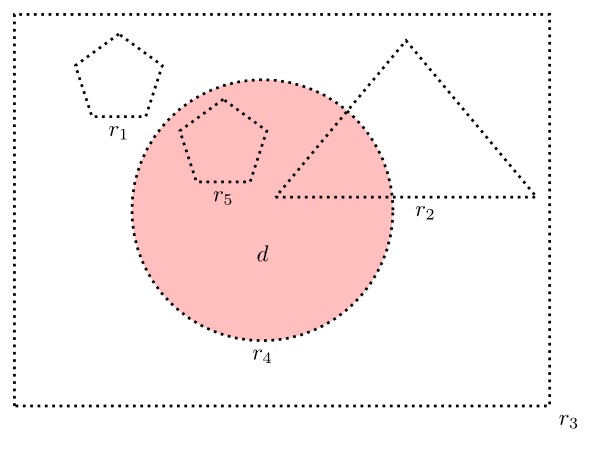

Location and Mereology
Substantivalists believe that there are regions of space or spacetime. Many substantivalists also believe that there are entities (people, tables, social groups, electrons, fields, holes, events, tropes, universals, …) that are located at regions. These philosophers face questions about the relationship between located entities and the regions at which they are located. Are located entities identical to their locations, as supersubstantivalists maintain? Are they entirely separate from their locations, in the sense that they share no parts with them?
Without prejudging these metaphysical questions, some philosophers have formulated logics of location—typically in the form of groups of axioms or axiom-schemas governing a location relation and its interaction with parthood and other mereological relations. One main aim of these logics is to capture the ways in which the mereological properties of and relations between located entities must mirror the mereological properties of and relations between the locations of those entities.
The recent literature focuses largely on three questions, each corresponding to a different way in which the relevant mirroring might fail:
- Say that two entities interpenetrate just in case they do not share parts but their exact locations do. Is interpenetration possible?
- Say that an extended simple is entity that has no proper parts but is exactly located at a region that does have proper parts. Are extended simples possible?
- Say that an entity is multilocated just in case it is exactly located at more than one region. Is multilocation possible?
The present article surveys recent work on these questions and addresses a number of other issues along the way.
- 1. Preliminaries: Spacetime and Parthood
- 2. Location
- 3. Interaction with Parthood
- 4. Interpenetration
- 5. Extended Simples
- 6. Multilocation
- 7. Further Issues
- Bibliography
- Academic Tools
- Other Internet Resources
- Related Entries
1. Preliminaries: Spacetime and Parthood
This article focuses on the recent literature on location and mereology. On the history of these topics, see Marmodoro (2017), Harte (2002), Sorabji (1983, 1988), Pasnau (2011), and Holden (2004), as well as the entries on ancient atomism, medieval mereology, atomism from the 17th to the 20th century, and mereology.
In keeping with the recent literature, we will focus on ‘entity-to-region’ location relations—i.e., location relations that paradigmatically hold between entities and regions. We will ignore location relations that hold between entities and nonregions. (Consider ‘the transmitter is located at the top of the ridge’. On its face, the top of the ridge is not a region.)
Since our focus is on entity-to-region location relations, we will work under the following controversial but popular assumption:
- Substantivalism There are such entities as regions.
Unless otherwise noted, we will assume that regions are spacetime regions, where these are thought of in accordance with the ‘Block Universe’ picture, as captured by the following:
- Eternalism The past, present, and future are all equally real.
- The B-theory of Time No time is present in any absolute, not-merely-indexical sense.
- The Spacetime View There is just one fundamental spatiotemporal arena: spacetime. Instants and intervals of time, if there are such things, are just spacetime regions of certain sorts. Likewise for points and regions of space.
Relatively little depends upon the Block Universe picture, however. If one dislikes talk of spacetime, one should be able reinterpret most of what we say here in terms of regions of space without loss of plausibility. Further, we assume that
- Subregions as Parts If x and y are both regions, then x is a subregion of y if and only if x is a part of y.
Subregions as Parts contrasts with another fairly common view according to which regions are sets of points and have their subregions as subsets but not as parts.
More generally, we will assume that there is just one fundamental parthood relation, that this relation holds univocally both between one region and another and between (say) one material object and another, and that the given relation is a two-place relation.
All of these assumptions are controversial. Some philosophers have explored the view that the fundamental parthood relation is three-place (Thomson 1983; Hudson 2001; Balashov 2008; Donnelly 2010; McDaniel 2014; Lafrance 2015) or four-place (Gilmore 2009; Kleinschmidt 2011). Others have argued that one fundamental parthood relation holds between regions, another between material objects (McDaniel 2004, 2009). And some have argued that there are no fundamental parthood relations (or other fundamental mereological relations, such as overlapping). Of these philosophers, some propose reductive definitions of parthood, whereas others eliminate parthood (Dorr 2005; Sider 2013; Cowling 2014a), though the distinction between reduction and elimination is sometimes blurry.
Nolan (2014) calls attention to a range of reductionist proposals, which can be divided into three main strategies.
A first strategy, which we can call the locationist strategy, is to define parthood in terms of the location relation together with the subregion relation (Oppenheim and Putnam 1958; Markosian 2014). For example, one might say that for x to be a part of y is for x's exact location to be a subregion of y's exact location. To avoid circularity, friends of the locationist strategy should reject Subregions as Parts, in favor of either (i) the view that regions are sets of points and x is a subregion of y if and only if both are regions and x is a subset of y or (ii) the view that subregionhood is primitive and fundamental. An objection to (i) is that regions are concrete, whereas sets are abstract, not concrete; an objection to (ii) is that positing a fundamental relation of subregionhood seems very similar to, and probably no more theoretically virtuous than, positing a fundamental parthood relation (though see Nolan 2014: 105–111). There are two main objections to the locationist strategy more generally.
First, there is the objection from the topic-neutrality of parthood. The idea here is that entities need not be located in space or spacetime to be parts or to have parts. For example, one might hold that the word type ‘cat’ is a part of the sentence type ‘the cat is on the mat’, despite the fact that neither is located. According to this objection, locational subregionhood is unnecessary for parthood.
Second, there is the objection from interpenetration, according to which an entity x is in some cases exactly located at a subregion of the exact location of an entity y despite the fact that x is not a part of y. For example, two bosons (or tropes or…) might have the same exact location without being parts of each other. (See Section 4 for further discussion.) If the objection from interpenetration is correct, then locational subregionhood is not sufficient for parthood
A more radical reduction of parthood to (among other things) a location-like relation is developed in Bennett (2013), who proposes that for x to be a part of y is for there to be an entity z such that (i) z is a parthood-slot in y and (ii) x occupies z. Bennett's views are discussed in Fisher (2013), Cotnoir (2015), and Garbacz (2017).
A second strategy, which we can call the monist strategy, is available to supersubstantivalists (those who hold that each material object is identical to a region). They can say that what it is for an entity x to be a part of an entity y is: (i) for x and y both to be material objects, i.e., both to be among those privileged regions that count as material objects, and (ii) for x to be a subregion of y. (Wake 2011 and Nolan 2014 develop this strategy.) One virtue of the monist strategy is that, unlike the locationist strategy, it does not need to invoke a fundamental location relation. But it is vulnerable to versions of many of the same objections, including those concerning the proper treatment of subregionhood, the objection from topic-neutrality of parthood, and the objection from interpenetration.
A third strategy, which we can call the plural strategy, is to define parthood in terms of identity and the ‘is one of’ notion from plural logic (on which see plural quantification), as follows: for x to be a part of y is for x to be one of some entities zz that (collectively) are identical to y (Bricker 2016: 270). But this strategy will be only as attractive as strong composition as identity, the controversial view that whenever some things xx compose a thing y, xx are identical to y. (See Wallace (2011a, b) and the essays in Cotnoir and Baxter (2014) for discussion and further references.) (A hybrid of the first and third strategies is pursued by McDaniel (2014: 21), who defines a three-place parthood relation in terms of a three-place, region-relative identity relation and a two-place subregionhood relation.)
For a defense of the view that parthood is fundamental, see Eddon (2017).
We now turn to the logic of the parthood relation. (See the entry on mereology for much more detail.) Here we assume merely that parthood is reflexive and transitive (a ‘preorder’). In a first-order language with identity and a primitive two-place predicate ‘P(x,y)’ for parthood, we can write:
- Reflexivity of Parthood
∀xP(x,x)
Each entity is a part of itself. - Transitivity of Parthood
∀x∀y∀z[[P(x,y)
& P(y,z)] → P(x,z)]
If x is a part of y and y is a part of z, then x is a part of z.
We will also find it convenient to have predicates for overlapping, disjointness, proper parthood, simplicity, complexity, gunkiness, and mereological coincidence. We define them as follows:
- (D1)
- Overlapping O(x,
y)
=df ∃z[P(z,
x) &
P(z, y)]
‘overlaps’ means the same as ‘shares a part with’ - (D2)
- Disjointness D(x,
y)
=df ¬O(x,
y)
‘x is disjoint from y’ means the same as ‘x does not overlap y’ - (D3)
- Proper Parthood PP(x,
y)
=df P(x,
y) & ¬x=y
‘x is a proper part of y’ means the same as ‘x is a part of but not identical to y’ - (D4)
- Simplicity S(x)
=df
¬∃yPP(y,
x)
‘x is simple’ (or ‘x is a simple’) means the same as ‘x doesn't have any proper parts’ - (D5)
- Complexity C(x)
=df
¬S(x)
‘x is complex’ means the same as ‘x is not simple’ - (D6)
- Gunkiness G(x)
=df
∀y[P(y, x)
→ C(y)]
‘x is gunky’ means the same as ‘each part of x is complex’ - (D7)
- Coincidence CO(x,
y)
=df ∀z[O(x,
z) ↔
O(y,z)]
‘x mereologically coincides with y’ means the same as ‘x overlaps exactly the same things as y’
Finally, if we supplement our first-order language with plural quantifiers and variables and the predicate ‘x≺yy’ for ‘x is one of yy’ (see the entry on plural quantification), we can define a fusion predicate:
- (D8)
- Fusion F(y,
xx)
=df ∀z[(z≺xx
→
P(z, y)) & (P(z, y) →
∃w(w≺xx & O(z,
w)))]
‘y fuses xx’ means the same as ‘each of xx is a part of y and each part of y overlaps at least one of xx’
We will treat the expressions ‘y is composed of xx’ and ‘y is a sum of xx’ as synonyms of ‘y fuses xx’.
This entry addresses questions framed in terms of modal notions. Are extended simples possible? Is it necessary that nothing is multilocated? All talk of possibility and necessity in what follows should be understood as talk of metaphysical possibility and metaphysical necessity, respectively. In keeping with current orthodoxy, we assume that being metaphysically necessary (a property of propositions or sentences) is not to be identified with being a logical truth, being an analytic truth, being a conceptual truth, or being an a priori truth. Although metaphysical necessity is not identified with conceptual truth—and, correlatively, metaphysical possibility is not identified with conceivability—one might still think that conceivability (or something in that vicinity) is evidence for metaphysical possibility. See Chalmers (2002) for distinctions between various sorts of conceivability and for discussion of how each of them connects or fails to connect to metaphysical possibility. Also see the entry on the epistemology of modality.
One last preliminary. For better or worse, the recent literature on location and mereology tends to bracket considerations of vagueness and indeterminacy (though see Eagle 2016a) and quantum theory (though see Pashby 2016). We will do the same.
2. Location
2.1 Which Location Relation is Fundamental?
Debates about location have been framed in terms of two main locational predicates: ‘is exactly located at’ and ‘is weakly located at’. Philosophers tend to agree about how these predicates apply in particular cases, and they tend to agree that one of these predicates should be taken as primitive and used to define the other. But there is disagreement about which to define and which to take as primitive. (Though certain exotic possibilities involving gunky objects (Leonard 2014) or extended simple regions (Kleinschmidt 2016) generate pressure to posit more than one fundamental location relation.)
Here is a typical informal gloss for ‘is exactly located at’: an entity x is exactly located at a region y if and only if x has (or has-at-y) exactly the same shape and size as y and stands (or stands-at-y) in all the same spatial or spatiotemporal relations to other entities as does y.[1] Thus, small cubes are exactly located only at small cubical regions, large spheres are exactly located only at large spherical regions, and so on (see Casati and Varzi 1999: 119–120; Bittner, Donnelly, and Smith 2004; Gilmore 2006: 200–202; Sattig 2006: 48).
Here is a typical informal gloss for ‘is weakly located at’: an entity x is weakly located at a region y if and only if y is ‘not completely free of’ x (Parsons 2007: 203). Thus I am weakly located at a certain region, r, whose shape, size, and position perfectly match my own, I am weakly located at the bottom half of that region, I am weakly located at a certain much larger region, r+, that has r as a proper part, and I am weakly located at a certain scattered region, r*, that's made up of the bottom half of r together with a small region somewhere in Siberia. In short, if r is the one and only region at which I am exactly located, then I am weakly located at just those regions that overlap r.
Figure 1
Figure 1 illustrates exact location and weak location. The dotted lines indicate regions (r1–r5). The shaded circle indicates a disc-shaped object, d, that is located at regions. In the diagram, d is exactly located at r4 but not at r1, r2, r3, or r5, and d is weakly located at r2, r3, r4, and r5 but not at r1.
Assuming that we now grasp the intended relations, we are in a position to consider proposals about how the associated predicates might be defined. Suppose that we take ‘x is exactly located at y’ as primitive and symbolize it as ‘L(x, y)’ (Casati and Varzi 1999). Then, as Parsons (2007: 204) notes, the following definition of ‘is weakly located at’ (‘WKL’) is natural:
- (D9)
- Weak Location WKL(x,
y)
=df ∃z[L(x,
z) &
O(z, y)]
‘x is weakly located at y’ means ‘x has an exact location that overlaps y’
One consequence of (D9) is that the following principle
- Exactness
∀x∀y[WKL(x, y) →
∃zL(x, z)]
If a thing is weakly located somewhere, then it's exactly located somewhere.
is an analytic truth (Parsons 2007). This might be seen as a drawback, for the following reason among others (Gilmore 2006: 203; Parsons 2007: 207–9). One might think that the following situation is possible: (i) all regions are extended and gunky and decompose into smaller (but still extended and still gunky) regions, (ii) some located entities are point-like and unextended, and (iii)entities are located only at regions. A point-like entity will be too small to be exactly located in any extended region, but it should still be weakly located at many regions—in particular, at each in a series of nested regions that ‘converge’ on the point-like entity. So, if it's possible that (i)–(iii) are all true, then it's possible that, contrary to Exactness, a thing is weakly located somewhere without being exactly located anywhere.
On the other hand, suppose that we take ‘WKL’ as primitive. How might we use this predicate to define ‘L’? This is less obvious, but the definition that Parsons (2007: 205) proposes is
- (D10)
- Exact Location L(x,
y)
=df ∀z[WKL(x,
z)
↔ O(y, z)]
‘x is exactly located at y’ means ‘x is weakly located at all and only those entities that overlap y’
To see how this definition works, return to the object d in Figure 1. We want it to turn out that d is exactly located at r4 and nowhere else. Given the natural assumptions about which regions are parts of which, (D10) delivers the desired verdicts.
For example, (D10) tells us that d is not exactly located at r3, for the reason that r3 overlaps certain regions (e.g., r1) at which d is not weakly located. In other words, r3 ‘overlaps regions it shouldn't’. The situation with r5 is reversed. (D10) tells us that d is not exactly located at r5, for the reason that there are regions at which d is weakly located (e.g., r2) that r5 does not overlap. In other words, r5 ‘fails to overlap regions it should’. Region r2 has both vices: it overlaps certain regions it shouldn't (e.g., its southeast corner), and it fails to overlap certain regions it should (e.g., r5). Region r4 has neither vice. Hence d counts as being exactly located at it, according to (D10).
One potential problem with (D10), however, is that it makes the following principle
- Quasi-functionality
∀x∀y∀z[(L(x,
y) & L(x, z)) →
CO(y, z)]
Nothing has two different exact locations, unless those locations mereologically coincide with each other.
an analytic truth. As we will see in Section 6, there are many who would deny Quasi-functionality, and there are others who deny that it is necessary.
In the spirit of van Inwagen (1981), one might take the fundamental location relation to be lying-within, where this holds only between a simple spacetime point, on the one hand, and a located entity, on the other. One might then define exact location in terms of it, as follows: ‘x is exactly located at y’ means the same as ‘for any z, if z is simple, then: z lies within x if and only if z is a part of y’. This has consequences similar to those of (D10). It has the additional disadvantage that, in the context of gunky spacetime, it yields the result that everything is exactly located everywhere.
Is it possible to do without any fundamental location relations? For substantivalists, there are two main strategies.
First, there is the supersubstantivalist strategy. Supersubstantivalists say that each material object is identical to the region that is its exact location. A first attempt at a supersubstantivalist definition of exact location is this: for x to be exactly located at y is for x to be identical to y. But this faces counterexamples involving abstract entities. The empty set is identical to itself but is not exactly located at itself. A natural repair invokes either the notion of a region (for those who are willing to say that all regions are exactly located at themselves) or the notion of a material object (for those who are not): for x to be exactly located at y is for x to be a region (alternatively: a material object) and identical to y. Weak location can then be defined via (D9). This account of exact location makes it hard to avoid full-blown Mereological Harmony, as captured by (H1)–(H8) below. (See Section 3.) As a result, every threat to Mereological Harmony, including the arguments for interpenetration, extended simples, and mutlilocation, is thereby a threat to the given account of exact location. But by the same token, one might argue that every instance of Mereological Harmony is explained by, and hence confirms, the supersubstantivalist strategy.
A variant of the supersubstantivalist strategy is available to those who deny that located entities are identical to their locations, provided that they are willing to say that those entities mereologically coincide with their locations. They can say that for x to be exactly located at y is for y to be a region and for x to mereologically coincide with y (Hawthorne 2006: 118, note 18).
Second, there is the relativizing strategy. As noted above, some philosophers hold that the fundamental parthood relation is three-place or four-place, with the additional argument places reserved for locations of the part and/or the whole. For example, to allow for multilocation and mereological variation from one location to another, Gilmore (2014b: 21) suggests taking the predicate ‘x at y is a part of z at w’ as primitive and using it to define ‘x is exactly located at y’, as ‘for some z and some w: either x at y is a part of z at w or z at w is a part of x at y’. The definition of the existence-at relation in Thomson (1983) is an early example of this strategy. To keep things simple, however, we will continue to assume that the fundamental parthood relation is two-place. So we will set the relativizing strategy aside.
2.2 The Pure Logic of Location
Most of the formal work on location has focused on questions about how location interacts with parthood. But there are important questions about location in its own right. Here we highlight two groups of questions.
2.2.1 Logical Form
We will assume that exact location, not weak location, is the unique, fundamental location relation. We will also assume that (i) it is a two-place relation, and (ii) both argument places in that relation are singular. (On the distinction between singular and plural argument places in relations, see Yi (1999).) But both (i) and (ii) have been questioned.
For example, one might reject (i) in favor of the view that exact location is a three-place relation that holds between a located entity, a region of space, and an instant of time (Thomson 1983, Costa 2017). This is a natural view for those who accept Eternalism and the B-theory but deny the Spacetime View, and instead think of space as a three-dimensional entity that endures through, and is separate from, time. (This picture is discussed in Skow 2015 and Gilmore, Costa and Calosi 2016.) To allow for the possibility of motion, those who endorse such a view will want to be able to say, of a given material object, that it is exactly located at region r1, not at region r2, at time t1, and that the same object is exactly located at r2, not at r1, at time t2. To allow for the possibility that time is gunky and does not contain instants, one might take exact location to be expressed by ‘x is exactly located at region r within interval s’. A different option is to reject (i) in favor of the view that exact location is variably polyadic, an idea floated by Jones (forthcoming: note 29).
Alternatively, one might agree that exact location is a two-place relation but reject (ii) above in favor of the view that, say, the second argument place in exact location (the ‘location’ slot) is plural. One idea is that an extended object can be exactly located at many points, collectively, without being exactly located at any one of them individually or at the set or fusion of them. This is suggested by Hudson (2005: 17); motivations are developed in Gilmore (2014b: 25). In principle, one could also hold that the first argument place in exact location (the ‘occupant’ slot) is plural.
2.2.2 Purely Locational Principles
If we assume that exact location is the one fundamental locational relation, that it's two-place, and that both of its argument places are singular, what should we say about its behavior? Here we confine our attention to purely locational principles, i.e., principles that can be stated in a first-order language with identity whose only non-logical predicate is ‘L(x, y)’.
Casati and Varzi (1999: 121) propose two principles:
- Functionality
∀x∀y∀z[(L(x,
y) & L(x, z)) →
y=z]
Nothing has more than one exact location. - Conditional Reflexivity
∀x∀y[L(x, y) →
L(y, y)]
Exact locations are exactly located at themselves.
Functionality bans multilocation, which we discuss at some length in Section 6. It tells us that nothing bears the exact location relation to more than one entity. Functionality leaves open the possibility of entities (regions, numbers, …) that do not bear that relation to anything.
According to Conditional Reflexivity, exact locations are exactly located at themselves. (See also Donnelly (2004: 158), who presents a system in which Conditional Reflexivity is a theorem, though she replaces the location predicate ‘L’ with a primitive function symbol ‘r’ for ‘the exact location of’.) To appreciate the significance of Conditional Reflexivity, suppose that Obama is exactly located at region r. Together with Conditional Reflexivity, this entails that r is exactly located at itself. This conflicts with a purely locational principle endorsed by Simons (2004b: 345):
- Asymmetry of Location
∀x∀y[(L(x, y) →
¬L(y, x)]
If x is exactly located at y then y is not exactly located at x.
Cases in which a region is exactly located at itself do not conflict with
- Antisymmetry of Location
∀x∀y[(L(x, y) &
L(y, x)) → x=y]
No two entities are exactly located at each other.
Thus the Antisymmetry of Location may salvage some of the motivation for the Asymmetry of Location while still harmonizing with Conditional Reflexivity. The Antisymmetry of Location is a logical consequence of Functionality and Conditional Reflexivity (as is the view that exact location is transitive).
If we further assume that Obama is not identical to his exact location r, we get the result that there are two different entities exactly located at r—namely, r and Obama. In that case, we have a counterexample to another purely locational principle that some have found attractive, namely:
- Injectivity of Location
∀x∀y∀z[(L(x,
z) & L(y, z)) →
x=y]
No two entities share an exact location.
Opponents of co-location may take this as a reductio of Conditional Reflexivity. Others may take it as a reason to reject the Injectivity of Location in favor of a weaker variant, e.g.:
- Conditional Injectivity of
Location
∀x∀y∀z[(¬x=z
& ¬y=z) → ((L(x, z)
& L(y, z)) → x=y)]
If neither x nor y is identical to z, then if each of them is exactly located at z, then x and y are identical to each other.
Conditional Injectivity is equivalent to the claim that whenever two different entities share a given exact location, one of them is identical to that location. This may salvage some of the motivation for the ban on co-location, while still harmonizing with Conditional Reflexivity.
With Conditional Reflexivity as a backdrop, Casati and Varzi (1999: 123) define a predicate for regionhood, ‘R’:
- (DR)
- Regionhood R(x)
=df L(x, x)
‘x is a region’ means the same as ‘x is exactly located at itself’
Together with Conditional Reflexivity, (DR) entails that that if x is exactly located at y, then y is exactly located at itself and hence is a region. But the (DR) + Conditional Reflexivity package also allows for cases in which an entity r counts as a region even though nothing but r is exactly located at r.
The regionhood predicate is potentially useful in stating restricted versions of familiar mereological principles. One might want a principle to the effect that any plurality of regions has a fusion, while remaining neutral on the more general claim that any plurality of entities whatever has a fusion. Likewise one might want a principle to the effect that non-identical regions never mereologically coincide, while rejecting the stronger claim that non-identical entities in general never mereologically coincide. (Perhaps a certain clay statue mereologically coincides with, but is not identical to, a certain lump of clay.) The most natural formulations of these restricted principles employ a regionhood predicate. Though one might take this predicate as primitive, considerations of ideological parsimony provide some motivation for treating it as defined.
To close this section, it is worth drawing attention to another logical consequence of Functionality and Conditional Reflexivity, namely:
- Shortness of Location
∀x∀y∀z[(L(x,
y) & L(y, z)) →
y=z]
If x is exactly located at y and y is exactly located at z, then y=z.
This says that exact locations are exactly located only at themselves (hence that ‘chains’ of exact location are always ‘short’). To see why this follows from Functionality and Conditional Reflexivity, suppose that x is exactly located at y. Then by Conditional Reflexivity, y is exactly located at y. If y is also exactly located at z, then by Functionality, y=z.
Shortness of Location might also appeal to those who accept Conditional Reflexivity but deny Functionality. Since Shortness of Location does not follow from Conditional Reflexivity alone, some may wish to adopt Shortness as an axiom.
3. Interaction with Parthood
Philosophers have put forward of variety of axiom systems that are meant to capture the interaction between parthood and location. One especially bold idea is that the mereological properties of, and relations between, located entities perfectly match those of their locations. This has been dubbed Mereological Harmony (Schaffer 2009).
For a collection of axioms that makes no attempt enforce Mereological Harmony, see the supplementary document on An Interpenetration-Friendly Theory of Location.
Mereological Harmony has been captured formally in different ways by Varzi (2007), Uzquiano (2011), and Leonard (2016). Saucedo (2011: 227–228) offers the following principles:
- (H1)
- x is mereologically simple iff x's location is mereologically simple.
- (H2)
- x is mereologically complex iff x's location is mereologically complex.
- (H3)
- x has exactly n parts iff x's location has exactly n parts.
- (H4)
- x is gunky iff x's location is gunky. …
- (H5)
- x is a part of y iff x's location is a subregion of y's location.
- (H6)
- x is a proper part of y iff x's location is a proper part of y's location.
- (H7)
- x and y overlap iff x's location and y's location overlap.
- (H8)
- The xs compose y iff the locations of the xs compose y's location.
Some philosophers take Mereological Harmony to be a necessary truth (Schaffer 2009: 138).[2] The remainder of this entry considers three separate threats to the view that Mereological Harmony is necessary: interpenetration (§4), extended simples (§5), and multilocation (§6).
There are other threats to Mereological Harmony that we will not discuss, e.g., threats to H7 and H8 that arise from ‘moderate views about receptacles’, according to which only topologically open (alternatively: only topologically closed) regions can be exact locations (see Cartwright 1975; Hudson 2005: 47–56; and especially Uzquiano 2006), or threats to H4 discussed in Uzquiano (2011).)
A case of interpenetration occurs when non-overlapping entities have overlapping exact locations—e.g., when a ghost passes through a wall. In such a case, the right-to-left direction of H7 fails. Similar cases involve violations of the right-to-left directions of H5 and H6. An extended simple is a simple entity with a complex exact location: it violates the left-to-right direction of H1, the right-to-left direction of the (equivalent) H2, and the left-to-right direction of the instance of H3 that results from letting n = 1. A case of multilocation occurs when a given entity has more than one exact location. This violates Functionality, which is left implicit in Saucedo's statement of Mereological Harmony.
The three questions that we will consider—Is interpenetration possible? Are extended simples possible? Is multilocation possible?—are logically independent of one another. Thus there is room for eight specific packages of views. See Figure 2.
| Package | Interpenetration? | Extended simples? | Multilocation? |
|---|---|---|---|
| 1 | yes | yes | yes |
| 2 | yes | yes | no |
| 3 | yes | no | yes |
| 4 | yes | no | no |
| 5 | no | yes | yes |
| 6 | no | yes | no |
| 7 | no | no | yes |
| 8 | no | no | no |
It is important to note that even if interpenetration, extended simples, and multilocation are all possible, some substantive principles linking parthood and location may still survive. For example, the possibility of interpenetration and extended simples poses no threat to:
- Expansivity
□∀x∀y∀z∀w[[P(x,
y) & L(x, z) & L(y,
w)] → P(z, w)]
Necessarily, if x is a part of y, and if x is exactly located at z and y is exactly located at w, then z is a part of w: ‘the part's location is a part of the whole's location’.[3] - Delegation
□∀x∀y∀z[[C(x)
& L(x, y) & P(z, y)]
→ ∃w∃u[PP(w, x)
& O(u, y) & L(w,
u)]]
Necessarily, if x is complex and is exactly located at y, then for any part z of y, some proper part w of x is exactly located at some region that overlaps z.[4]
Expansivity rules out cases like the following (Figure 3), in which the object a is a part of the object o, but a's exact location, ra, is not a part of o's exact location, r.
Ruled out by Expansitivity
The idea behind Delegation is that if x is complex, then if you stick a pin into x's exact location, you will have stuck that pin into the exact location of one of x's proper parts as well. In slightly different terms, a complex entity can't be weakly located at a certain region unless one of its proper parts—a ‘delegate’—is weakly located at that region as well. (Regarding the formal statement of Delegation, one might wonder why it is not formulated with ‘PP(u, y)’ in place of ‘O(u, y)’ in the consequent. The reason for this is that Delegation is meant to be friendly to extended simples. Suppose that a complex, spherical object, C, is exactly located a spherical region, r. Suppose that C is composed of two hemispherical simples, h and h*, and that r is composed of continuum-many simple points, each plurality of which composes a region that is a part of r. Then, contrary to the proposed revision, it will not be true that for every part y of r, some proper part of C is exactly located at a region that has y as a proper part. Consider, for example, the spherical region r* with the same center point as, but half the volume as, r itself. C does not have a proper part that is exactly located at r*, nor does it have a proper part whose exact location has r* as a proper part. But, as Delegation requires, C does have a proper part (h, for example) that has an exact location that overlaps r*.)
Delegation rules out cases like the following (Figure 4), in which o* is a complex object that is exactly located at region r*, but r* has a part ra that does not overlap an exact location of any of o*'s proper parts:
Ruled out by Delegation
Neither interpenetration nor extended simples seem to threaten Expansivity or Delegation.
A potential threat to Delegation comes from Pickup (2016: 260), who considers the possibility of a complex entity that is exactly located somewhere despite the fact that none of its proper parts is exactly (or weakly) located anywhere. One route to such entities (not Pickup's) runs as follows: (i) some material objects (electrons, maybe) do not have any other material objects as proper parts, (ii) any such material object is a complex entity whose only proper parts are universals, (iii) all material objects have locations, but (iv) no universals have locations. Bundle theorists who are platonic realists about universals, and who take the constituents of a given bundle to be parts of that bundle, will face pressure to accept (i)–(iv) and hence to reject Delegation. The same basic idea is discussed in connection with the Burying Strategy in Section 4.1 below.
4. Interpenetration
In this section we consider arguments for and against the following principle:
- No Interpenetration
□∀x∀y∀z∀w[(L(x,
z) & L(y, w) & O(z,
w)) → O(x, y)]
Necessarily, if x and y have exact locations that overlap, then x and y themselves overlap.
According to No Interpenetration, it is metaphysically impossible for entities of any type to ‘pass through one another’ without sharing parts—in the manner of a ghost passing through a solid brick wall. There is a related principle that deserves some comment. The related principle says that, necessarily, if x's exact location is a part of y's exact location, then x is a part of y. In symbols:
- (1)
- □∀x∀y∀z∀w[(L(x, z) & L(y, w) & P(z, w)) → P(x, y)]
This principle may seem to say basically the same thing as No Interpenetration but to say it more simply—using the primitive predicate ‘P’ instead of the defined predicate ‘O’. Why then focus on No Interpenetration instead of (1)?
The reason for this is that some of the opposition to (1) will stem from opposition to a purely mereological principle: Strong Supplementation. It says that if every part of x overlaps y, then x is a part of y. Those who deny this will be very likely to deny (1), but they might still be attracted to No Interpenetration. Let Lump1 be a lump of clay, and let Goliath be the statue that is ‘made out of’ Lump1. One might think that every part of Goliath overlaps Lump1 (and vice versa), and that Goliath's exact location is a part of (indeed, identical to) Lump1's exact location, but that Goliath is not a part of Lump1 (Lowe 2003). In that case one will reject (1). But one might still go on to say that ‘ghostly-interpenetration-without-part-sharing’ is impossible, and hence that No Interpenetration is true. After all, Goliath and Lump1 share parts, as do Goliath's top two-thirds and Lump1's bottom two-thirds, and so on.
In general, our task here is to set aside the purely mereological controversies (see the entry on mereology) and to focus instead on the issues that are exclusively concerned with location and its interaction with parthood. Too much of the controversy over (1) arises from controversy over ‘pure mereology’. By contrast, if No Interpenetration is controversial, this is only because of what it says about the connections between parthood and location.
4.1 For Interpenetration #1: from Universals or Tropes
Immanent realists say that a universal is in some sense ‘wholly present’ in each thing that instantiates it (Armstrong 1978: 79; Bigelow 1988; O’Leary-Hawthorne 1995; Smith 1997; O’Leary-Hawthorne and Cover 1998; Paul 2002, 2006, 2012; Newman 2002; Hawley and Bird 2011; Lafrance 2015; Peacock 2016). This makes it natural to hold that disjoint universals frequently interpenetrate.
To see why, let e be an electron, and suppose that it instantiates two different universals: a mass universal, um, and a charge universal, uc. Suppose that e is exactly located at region r. Then it will be natural for the immanent realist to say that (i) um is exactly located at r as well, or at least at some region rm that has r as a part, and (ii) uc is exactly located at r or at some region rc that has r as a part. (If these universals are also instantiated elsewhere, then it will be debatable as to whether they are exactly located at r. Perhaps um has only one exact location, which fuses the exact locations of its instances (Effingham 2015). Likewise for uc.) Either way, the immanent realist will say that um and uc have exact locations that overlap. But presumably um and uc do not overlap. Assuming that these universals are non-structural, non-conjunctive, and perfectly natural, they are plausibly simple, in which case they overlap only if they are identical, which they are not. It would seem that a similar point can be made in terms of tropes—particular, spatiotemporally located ‘cases’ of properties or relations. For trope theorists who take tropes to be located at spacetime regions, it will be natural to say that mass tropes and charges tropes, for example, frequently interpenetrate. (Since electrons have charge and mass, trope theorists will find it natural say that if an electron is exactly located at a region r, then the electron's mass trope and the electron's charge trope are both exactly located at r as well, hence that those tropes' locations overlap (by being identical). But presumably the tropes themselves are not identical and do not overlap. Three responses to this argument are worth considering.
The first response says: so much the worse for tropes and immanent universals. This response uses a mereo-locational principle, No Interpenetration, as a premise in an argument against certain metaphysical views, namely those that posit tropes or immanent universals. Is there some reason why mereo-locational principles should not be used in this way? The principles of pure mereology are often so used. For example, Lewis (1999: 108–110) rejects states of affairs and structural universals on the grounds that they would violate the Uniqueness of Composition, the principle that no entities xx have more than one fusion.[5] Why not give the same status to certain mereo-locational principles? Why not, for example, say that No Interpenetration is better justified than is the view that universals or tropes are spatiotemporally located? True, it is hard to say much by way of argument for No Interpenetration. But the same can be said of various purely mereological principles, such as the Transitivity of Parthood, and this is often treated as a non-negotiable constraint that any metaphysical position must obey.
The second response says that while immanent universals or tropes are spatiotemporal entities that are ‘in their instances’, they are not exactly located anywhere. Armstrong writes that
Talk of the location of universals, while better than placing them in another realm, is also not quite appropriate… To talk of locating universals in space-time then emerges as a crude way of speaking. Space-time is not a box into which universals are put. Universals are constituents of states of affairs. Space-time is a conjunction of states of affairs. In that sense, universals are “in” spacetime. But they are in it as helping to constitute it. (1989: 99)
Simplified somewhat, the response holds that (i) universals are parts or constituents of entities that have exact locations, and in that sense they are ‘in their instances’, but (ii) universals do no themselves have exact locations and hence do not have overlapping exact locations. Given (ii), the universals or tropes in question no longer count as examples of interpenetration. Call this the Burying Strategy, since it ‘buries’ universals and/or tropes in located entities, rather than treating them as being located.
Here is an especially vivid instance of the Burying Strategy: All tropes are instantaneous, spatially point-sized, and mereologically simple. All spacetime points are instantaneous, spatially point-sized, and mereologically complex. In particular, each spacetime point is a fusion of some tropes (each of which is at zero distance from each of the rest), and each trope is a part of exactly one spacetime point. Something counts as a spacetime region if and only if it is either a spacetime point or a fusion of some spacetime points. Each spacetime region is exactly located at itself and nothing else has an exact location.
On this view, tropes are parts of spacetime points and regions but they do not have exact locations. Hence, even if two tropes are both parts of the same spacetime point, they do not interpenetrate, in our sense.
The third response to the argument from universals and tropes is to say, ‘True, universals and/or tropes can interpenetrate, but material objects can't’. This grants the argument and rejects No Interpenetration in favor of a weaker, restricted principle. If we introduce a one-place predicate, ‘M’, for ‘is a material object’, then we can state the restricted principle as
- (2)
- □∀x∀y∀z∀w[(M(x)
& M(y) & L(x, z) &
L(y, w) & O(z, w))
→
O(x, y)]
Necessarily, if material objects x and y have exact locations that overlap, then x and y themselves overlap.
This response also handles potential counterexamples to No Interpenetration arising from regions, sets, events, portions of stuff, holes, spirits, and other ‘immaterial entities’.
(On the location of regions, see Casati and Varzi (1999: 123), who hold that regions are located at themselves, and Simons (2004b: 345), who holds that nothing is located at itself. On the location of sets, see Maddy (1990), Lewis (1991), Effingham (2010b; 2012), and Cook (2012). On the location of events, see Casati and Varzi (1999), Price (2007), Giordani and Costa (2013, 2016) and Costa (2017). On the location of portions of stuff, see Markosian (1998), (2004a), and (2015). On the location of holes and shadows, see Lewis and Lewis (1970), Casati and Varzi (1994), Wake, Spencer, and Fowler (2007), Donnelly, Bittner, and Rosse (2006), and Sorensen (2008). On the location of spirits, see Thomas (2009) and Inman (2017). Sanford (1970) discusses many of these topics, and Hudson (2005: 4) mentions many of them briefly.)
The next two pro-interpenetration arguments count equally against No Interpenetration and (2), but we will continue to focus on No Interpenetration for simplicity.
4.2 For Interpenetration #2: from Material Objects and Conceivability
Some think that it is possible for two disjoint material objects to have overlapping exact locations. Perhaps there are no actual cases of the relevant sort. Such cases may even be physically impossible—ruled out by the laws of nature (though see the next section). But one might still think that these cases are metaphysically possible.
After all, what is it that keeps material objects from interpenetrating in the actual world? Repulsive forces, presumably. But a standard view is that the laws governing such forces are not metaphysically necessary.[6] And on that assumption it is natural to conclude that there are metaphysically possible worlds in which any repulsive forces that exist can be overridden in such a way as to allow material objects to interpenetrate. (For more on this, see Zimmerman 1996a and Sider 2000.)
A similar line of thought is sometimes framed as a conceivability argument. One might take cases of interpenetration to be conceivable or intuitively possible, and one might take this to be some evidence for their possibility. In New Essays the Human Understanding (II.xxvii.1), Leibniz writes that
we find that two shadows or two rays of light interpenetrate, and we could devise an imaginary world where bodies did the same. (1704 [1996])
Sanford describes such a scenario in more detail:
What imaginable circumstances would tempt us to say that two [disjoint] things were in the same place at the same time? Imagine two rectangular blocks of the same size and shape each moving along a straight path perpendicular to the other. The blocks approach the intersection of the paths at the same time, and apparently neither slows down nor changes its direction. They seem to pass right through one another, and they do this without changing with respect to colour, texture, density, etc. We want to say that we have the same two blocks with which we started. And we do not want to say that either block passed out of existence and was shortly thereafter re-created. Thus we want to say that each block moved along its path without any spatio-temporal discontinuity. And we can say this only if we admit that parts of one block simultaneously occupied the same space as parts of the other block. (1967: 37)
An objection suggests itself. Why think that, in this scenario, the blocks really are disjoint while they are passing through one another?
In response, one might just stipulate that what is under consideration are two always-disjoint blocks, and then insist that the case remains conceivable, so described.
Alternatively, one might further specify the case in such a way as to be able to argue for the blocks' disjointness. Consider a certain region, r, that is said by Sanford to the exact location of two disjoint material objects: p1 (a part of Block 1) and p2 (a part of Block 2). One might add that two incompatible properties are instantiated at r—say, having mass of 2 kg, and having mass of 3 kg—where each of these properties is such that if it is instantiated by an entity x, then it is instantiated by anything that mereologically coincides with x. Presumably this is no less conceivable (or ‘intuitively possible’) than Sanford's original case. But in this new version of the case, it is not open to Sanford's opponent to claim that the co-located objects are identical or mereologically coincident with each other. For the region contains a 2 kg object and a 3 kg object, and no one object is identical to (or mereologically coincident with) both a 2 kg object and a 3 kg object.
4.3 For Interpenetration #3: from Bosons
One question that has been raised in the recent philosophical literature is whether contemporary physics provides us with examples of disjoint fundamental particles that have the same, or overlapping, exact locations. Hawthorne and Uzquiano apparently claim that the answer is ‘Yes’. They write that
particles having integral spin—otherwise known as bosons—in modern particle physics … are generally thought to be point-sized. Moreover, according to the spin statistics theorem, while fermions—point-particles with half integer spin—cannot be colocated, bosons are perfectly well able to cohabit a single spacetime point. (2011: 3–4)
Schaffer suggests otherwise:
[a] more sophisticated treatment of these cases involves field theory. Instead of there being two bosons co-located at region r, there is a bosonic field with doubled intensity at r. (2009: 140)
Whereas Hawthorne and Uzquiano apparently take bosons to provide actual examples of interpenetration, McDaniel suggests that they at least reinforce the conceivability of such counterexamples:
what this example shows is that [disjoint] co-located material objects are not merely conceivable, but that a tremendously detailed conception of them has been formed: [disjoint] co-located objects play a role in the interpretation of certain physical theories. It might be that at the end of the day speculative physics will postulate co-located material objects. It seems to me that we should not disregard this possibility a priori. (2007a: 240)
If one's goal, in constructing a theory of location, is to articulate the necessary and a priori truths governing location and its interaction with parthood, then even McDaniel's modest point still counts against including No Interpenetration in one's theory. For if McDaniel is right, then that principle is at best an a posteriori truth, though perhaps still a necessary truth. (See Simons (1994a, 2004a) for further discussion of bosons and for related considerations in support of interpenetration. For further discussion of Hawthorne and Uzquiano, see Cotnoir (2016).)
4.4 For Interpenetration #4: from Recombination
Sider (2000: 585–6), McDaniel (2007a), and Saucedo (2011) have all objected to No Interpenetration on the grounds that it conflicts with plausible ‘principles of recombination’, which forbid certain sorts of necessary connections between distinct properties and relations. McDaniel's formulation of the objection, which is similar to Sider's, runs as follows:
The state of affairs in which [a simple] object x occupies a particular region of space R (at t) is distinct from the state of affairs in which [some other simple] object y occupies the same region (at the same time). From the fact that the first state of affairs obtains, we can infer nothing about the location of y. Both states of affairs obtain contingently. If any recombination of distinct, contingent states of affairs yields a genuine possibility, as I am inclined to hold, then there are possible worlds at which both x and y occupy R (at t). (2007a: 241)
Let o1 and o2 be two different objects, let r be a region, and consider the following states of affairs:
- s1
- o1's being simple and exactly located at r
- s2
- o2's being simple and exactly located at r
Then we can reconstruct McDaniel's argument as follows:
- Premise 1
- s1 is a contingent state of affairs.
- Premise 2
- s2 is a contingent state of affairs.
- Premise 3
- s1 is distinct from s2.
- Premise 4
- For any x and any y, if x and y are each contingent states of affairs, and if they are distinct from each other, then possibly, both x and y obtain.
- Therefore
- Conclusion
- Possibly, both s1 and s2 obtain.
If it's possible for both s1 and s2 to obtain, then it's possible for a given region to be the exact location of two different simples. And since no two simples can overlap, this would mean that it's possible for disjoint things (the simples) to have identical (hence overlapping) exact locations.
Is the argument successful? As Sider and McDaniel are well aware, the term ‘distinct from’ needs to mean something other than ‘not identical to’, if the recombination principle, Premise 4, is to get off the ground. After all, the state of affairs of o's being 2 kg in mass and the state of affairs of o's being 3 kg in mass are both contingent, and they are not identical to each other, but presumably it is not possible that they both obtain. (Presumably it's not possible that something is both 2 kg and 3 kg in mass.)
But it is no easy matter to give ‘distinct from’ a meaning that makes Premises 3 and 4 simultaneously plausible. If it means ‘shares no parts or constituents with’, then Premise 4 avoids the counterexample given above, but Premise 3 ceases to be plausible, since s1 and s2 do plausibly share a constituent, namely r. If ‘s is distinct from s*’ is defined as ‘(i) possibly, s obtains and s* does not, (ii) possibly, s does not obtain and s does, (iii) possibly, neither s nor s* obtains, and (iv) possibly, both s and s* obtain’, then Premise 4 is trivially true, but Premise 3 begs the question.
For additional arguments in favor of interpenetration, including a more detailed recombination argument, see Section 1.1 of the supplementary document Additional Arguments.
4.5 Against Interpenetration #1: from Supersubstantivalism
Supersubstantivalism is often glossed as the view that each material object is identical to the spacetime region at which the object is exactly located.[7] If supersubstantivalism is not just true but necessary, then it is impossible for disjoint material objects to be exactly located at overlapping regions. After all, if material object x is exactly located at region r1 and material object y is exactly located at r2, and r1 and r2 overlap, then, given supersubstantivalism, x=r1 and y=r2, and hence x and y overlap as well.
This gives us an argument for (2), the version of No Interpenetration restricted to material objects. (However, (2) conflicts with the possibility of Sanford's interpenetrating blocks, so the argument will be controversial.) But the argument does not give us an argument for No Interpenetration. For it wouldn't follow that it is impossible for there to be disjoint entities of any kind to have overlapping exact locations. Supersubstantivalism, as stated above, leaves open the possibility that there are universals or tropes, e.g., that are exactly located at regions but not identical to them. Hence it leaves open the possibility that disjoint entities that are not material objects might have overlapping exact locations.
To construct an argument for No Interpenetration, we would need to appeal to a stronger supersubstantivalist doctrine, for example:
- Supersubstantivalism+
□∀x∀y[L(x, y)
→ x=y]
Necessarily, each entity is identical to anything at which it is exactly located.
Supersubstantivalism+ entails No Interpenetration. Take any objects x and y in any possible world, and suppose that they have exact locations, r1 and r2 respectively, that overlap. Then, given Supersubstantivalism+, x=r1 and y=r2, hence x and y overlap.
For a second, related argument against interpenetration, see Section 1.2 of the supplementary document Additional Arguments.
5. Extended Simples
A simple is an entity that has no proper parts. Are there any simples? Within the realm of spatiotemporal entities, some natural candidates are: spacetime points, fundamental particles such as electrons (or instantaneous temporal parts of them), and perhaps certain universals, certain tropes, or certain sets. On the other hand, it would seem to be an empirically open possibility that all spatiotemporal entities are gunky.
Say that an entity is extended just in case it is a spatiotemporal entity and does not have the shape and size of a point. In this sense of ‘extended’, a solid cube would count as extended, but, given natural assumptions, so would a fusion of two point-particles that are one foot apart. Although such a fusion is naturally taken to have zero length, it would be a scattered object and so would not have the shape of a point.
Are there any extended simples? Could there be? Those who answer ‘No’ to both questions will be inclined to accept
- No Extended Simples (NXS)
□∀x∀y[[L(x, y)
& C(y)] → C(x)]
Necessarily, if x is exactly located at y and y is complex, then x is complex.
Strictly speaking, NXS does not say that extended simples are impossible; rather, it says that simples with complex exact locations are impossible. It leaves open the possibility that there are extended simple regions and extended simple entities that are exactly located at them. (For more on extended simple regions and discrete space or spacetime, see Forrest 1995, Tognazzini 2006, Braddon-Mitchell and Miller 2006, McDaniel 2007, Dainton 2010: 294–301, Spencer 2010, 2014, Hagar 2014, Jaeger 2014, and Kleinschmidt 2016.) And it rules out the possibility that there is a point-sized material simple that is exactly located at a point-sized but mereologically complex region (e.g., a region that is the fusion of several point-sized tropes each of which is at zero distance from each of the others).
For the most part, however, it will do no harm to treat the debate over extended simples as a debate over NXS. We can do so if we assume that, necessarily, a region is extended if and only if it is complex. So, in what follows, we will operate under that assumption unless we explicitly note otherwise.
5.1 For Extended Simples #1: from Conceivability
An initial argument appeals to the claim that extended simples are conceivable and takes that to be some evidence in favor of their possibility. To conceive of an extended simple, think of an extended—say, cubical—object that has no proper parts. The idea is not, or not merely, that the cube cannot be physically split or cut up. Whether or not it can be split is a separate question. The idea is that there are no proper parts of the cube. Although the object is cubical, it has no top half or bottom half, no left half or right half. All there is, in the relevant vicinity, is the cube itself—together with the region at which it is exactly located and the parts of that region.
Debates about extended simples typically focus on the question of whether extended simple material objects are possible. But entities in other ontological categories (tropes, universals, sets, regions) are sometimes thought to be located. So it is worth keeping in mind that, whatever one thinks about material objects, one might hold that extended simples in other categories are possible. With that said, we will focus on material objects for the remainder of this section.
5.2 For Extended Simples #2: from String Theory
As McDaniel (2007a: 235–6) notes, some physicists interpret string theory as positing extended simples. McDaniel quotes a passage from Brian Greene:
What are strings made of? There are two possible answers to this question. First, strings are truly fundamental—they are “atoms,” uncuttable constituents. … As the absolute smallest constituents of anything and everything, they represent the end of the line … in the numerous layers of substructure in the microscopic world. From this perspective, even though strings have spatial extent, the question of their composition is without any content. Were strings to be made of something smaller they would not be fundamental. Instead, whatever strings were composed of would immediately displace them and lay claim to being an even more basic constituent of the universe … [A] string is simply a string—as there is nothing more fundamental, it can't be described as being composed of any other substance. (1999: 141–2)
Can strings be treated as being identical to the spacetime regions at which they are exactly located? Greene does not explicitly address this question. If the answer is ‘Yes’, however, and if strings are exactly located only at complex regions, then string theory would not be committed to extended simples after all. For an argument that string theory does not posit extended simples, see Baker (2016).
5.3 For Extended Simples #3: from Recombination
As we noted in Section 4.4, Sider, McDaniel, and Saucedo have argued for the possibility of interpenetration by appeal to principles of recombination. They have also marshaled these principles in support of the possibility of extended simples (Sider 2007; McDaniel 2007b; Saucedo 2011). Here is the core of McDaniel's argument:
(NNC): Let F and G be accidental, intrinsic properties; let R be a fundamental relation; let x and y be contingently existing non-overlapping entities. Then it is not the case that, necessarily, Rxy only if (Fx if and only if Gy)…if we accept the Humean premise that there are no necessary connections between the accidental, intrinsic properties of regions of space and the accidental, intrinsic properties of material objects, then we should hold that there are no necessary connections between the mereological structure of a material object and the mereological structure of the region it occupies. Specifically, it is not true that, necessarily, a material object is a simple if and only if it occupies a simple (read: pointsized) region of spacetime. It follows that extended material simples are possible. (2007b: 135–137)
If we let o and r be contingently existing, non-overlapping entities, then McDaniel's argument can be reconstructed as follows:
- (3)
- Exact location is a fundamental relation.
- (4)
- being simple is an accidental, intrinsic property.
- (5)
- being a simple region is an accidental intrinsic property.
- (6)
- Object o and region r are contingently existing, non-overlapping entities.
- (7)
- For any accidental, intrinsic properties F and G, any fundamental relation R, and any contingently existing non-overlapping entities x and y, it is not the case that, necessarily if Rxy then (if Fx then Gy).[8]
- Therefore
- (8)
- It is not the case that necessarily, if o is exactly located at r, then: if o is simple then r is a simple region.
Supersubstantivalists will deny that exact location is a fundamental relation. Others might take aim at McDaniel's recombination principle. Let F be the property being round and let G be the property not being square. These may seem to be accidental and intrinsic. But if they are, and if exact location is fundamental, then McDaniel's principle tells us that it is possible for a round object to be exactly located at a square region, which some might take as a reductio of (7). McDaniel (2007b) and Skow (2007), however, take this to show that the given shapes are not intrinsic properties. For a more detailed discussion of recombination principles such as (7), and a defense of the view that shapes are intrinsic, see Kleinschmidt (2015).
For further arguments in favor of extended simples, including a more detailed recombination argument, see Section 2.1 of the supplementary document Additional Arguments.
5.4 Against Extended Simples #1: Supersubstantivalism
According to supersubstantivalism, each material object is identical to the spacetime region at which it is exactly located. Those who take supersubstantivalism to be a necessary truth are likely to be hostile to the possibility of extended simples—or at least to the possibility of extended simple material objects. For they are likely to endorse the following argument:
- (9)
- Necessarily, all material objects are regions.
- (10)
- Necessarily, all extended regions are complex.
- Therefore
- (11)
- Necessarily, all extended material objects are complex. In other words, it is impossible for a material object to be an extended simple.
Most defenders of extended simples will resist this argument by denying (9). They tend to think of material objects as being non-identical to, and indeed mereologically disjoint from, the regions at which they are exactly located (Markosian 1998; McDaniel 2007b, 2009; Parsons 2007; Saucedo 2011). A different option is to reject (10) in favor of the view that there are, or at least could be, extended simple spacetime regions (Braddon-Mitchell and Miller 2006).
The above argument yields only a weak, restricted version of NXS, the ban on extended simples. It leaves open the possibility of extended simples that are not material objects.
NXS does follow from Supersubstantivalism+, according to which it's a necessary truth that each entity is identical to anything at which it is exactly located. For suppose that x is exactly located at y and that y is complex. Then, given Supersubstantivalism+, x=y, hence x is complex too.
5.5 Against Extended Simples #2: from Qualitative Variation
A second argument against extended simples arises from problems about simples whose intrinsic properties vary across space or spacetime:
- (12)
- If it is possible for there to be an extended simple, then it is possible for there to be an extended simple that exhibits intrinsic qualitative variation across spacetime—e.g. an extended simple that is white in one region and grey in another. (Colors are just placeholders; presumably more realistic examples are available.)
- (13)
- Necessarily, for any x, if x varies across spacetime with respect to its intrinsic properties, then there are incompatible intrinsic properties F and G and parts x1 and x2 of x such that x1 instantiates F and x2 instantiates G.
- (14)
- Necessarily, for any x, if there are incompatible intrinsic properties F and G and parts x1 and x2 of x such that x1 instantiates F and x2 instantiates G, then x is not simple.
- Therefore
- (15)
- It is not possible for there to be an extended simple.
The argument is valid and (14) is clearly true. If x has a part that instantiates F and a part that instantiates G, then, provided that these properties are incompatible, the parts in question are not identical. So x has at least two parts. So at least one of them must be a proper part of x, in which case x is not simple.
One might resist the argument by denying (12) and saying that a simple can be extended but only if it is qualitatively homogeneous across spacetime. (Spencer 2010 denies the possibility of heterogeneous extended simples. Jaeger 2014 responds; Spencer 2014 replies.) But most friends of extended simples grant (12) and reject (13). This can be done in at least four ways.
5.6.1 The relativizing approach
The relativizing approach says that if a simple, o, is white in one region and grey in another, then o bears the being white at relation to the first region and the being grey at relation to the second; it need not have a part that instantiates the property whiteness or a part that instantiates the property greyness. Alternatively, one might treat instantiation as a three-place relation, and say that o instantiates the property whiteness at one region and instantiates the property greyness at another.
Both versions of this approach are based on theories of persistence and change that attempt to reconcile eternalism and the B-theory of time with endurantism, the view that objects are wholly present at multiple times and do not have temporal parts (for more on endurantism, see section 6.3). Accordingly, the standard criticisms of the relevant theories of persistence and change (on which see Haslanger 2003) would seem to apply equally to the relativizing approach to the problem of qualitative variation for extended simples. The main criticism is that, by appealing to relations to regions, the relativizing approach makes an object's color distribution (or whatever) a dyadic relation or an extrinsic property, when it is in fact (says the critic) an intrinsic property, involving only the object, its parts, and the intrinsic properties of these things.
5.6.2 The stuff-theoretic approach
Markosian (1998, 2004a, 2015) distinguishes between things (e.g., material objects) and stuff (e.g., matter). Stuff, according to Markosian, comes in portions, but no portion of stuff is a thing. Both things and portions of stuff can have parts, but any part of a thing is itself a thing, and any part of a portion of stuff is itself a portion of stuff. Crucially, each thing is constituted by a portion of stuff. With this framework in place, Markosian offers the following account. There can be extended simple things, but there cannot be extended simple portions of stuff. When an extended simple, o, is white in region rw and grey in region rg, this isn't because o itself has a part that is exactly located at rw and instantiates whiteness and another part that is exactly located at rg and instantiates greyness; rather, it's because the portion of stuff that constitutes o has such parts. This preserves the simplicity of the extended thing. It may also avoid the complaint, facing the relativizing approach, that it makes the color distribution of an extended simple an extrinsic matter. The relation between a thing and the portion of stuff that constitutes it is apparently more intimate than the relation between a thing and the region at which it is exactly located. Moreover, the stuff-theoretic approach, unlike the relativizing approach, holds that when an extended object is white in one region and grey in another, the monadic, intrinsic properties whiteness and greyness (not merely the dyadic relations being white at and being grey at) are both instantiated. However, some may doubt that a complex entity could constitute a simple one.
5.6.3 Distributional properties
Parsons (2000) proposes that if a simple is white in one region and grey in another, then it has a fundamental, intrinsic, distributional property. Some distributional properties, such as being black all over, are uniform. Others, such as being polka-dotted are non-uniform. When a simple has a non-uniform distributional property, this fact is not grounded in its having parts, configured in a certain way, that each have simpler, uniform properties. Nor is it grounded in the simple's standing in incompatible relations (being white at and being grey at) to different spacetime regions. Rather, it is an ungrounded fact about the simple. This apparently avoids the worries about extrinsicness that face the relativizing approach, and it makes no appeal to Markosian's unorthodox notion of constitution.
As McDaniel (2009) notes, however, Parsons is apparently forced to treat facts of the form x is F at r as unanalyzed and ungrounded, which one might take to be a drawback. In Figure 5, the objects o1 and o2 presumably have the same maximally determinate distributional color property: roughly, being grey in one half and white in the other.
Figure 5
Call this property P. Further, object o1 is grey at region r1g. What grounds this fact? Not the fact that o1 has P. After all, o2 also has P, but it is not grey at r1g. Not the fact that o1 has P and is exactly located at r1. For it is possible that there be a thing that has P and is exactly located at r1g but is not grey at r1g: this is the case, e.g., in the possible world that results from deleting o1 and putting o2 in its place (without rotating it clockwise or counterclockwise). Thus, in addition to his basic distributional properties, Parsons is apparently forced to treat relations to regions (e.g., being grey at) as being basic as well.
The relativizing approach has no such problem: it treats relations to regions as basic and analyzes distributional properties in terms of them. The stuff-theoretic approach avoids the problem too. It analyzes facts of the form x is F at y as: either x or the portion of stuff that constitutes x has a part that is exactly located at y and is F.
5.6.4 Tropes
McDaniel (2009) attempts to avoid all the above problems by appeal to a theory of tropes developed by Ehring (1997a,b). The idea is that a simple can be grey in one region and white in another region by instantiating a greyness trope that is exactly located at the first region and instantiating a whiteness trope that is exactly located at the second region. This permits an analysis of facts of the form x is F at y as x instantiates an F-ness trope that is exactly located at y; it makes no appeal to stuff or portions of stuff; and, since it invokes monadic color tropes, it (arguably) refrains from treating the facts about a simple's color distribution as being fundamentally relational and extrinsic.
For further arguments against extended simples, see Section 2.2 of the supplementary document Additional Arguments.
6. Multilocation
To say that an object is multilocated is to say that it has more than one exact location: ‘x is multilocated’ means ‘∃y1∃y2[L(x, y1) & L(x, y2) & y1≠y2]’. We consider a series of putative examples of multi-location in Section 6.3.
The debate over multilocation concerns
- Functionality+
□∀x∀y1∀y2[[L(x,
y1) & L(x, y2)]
→ y1=y2]
Necessarily, nothing has more than one exact location.
Opponents of multilocation accept Functionality+. Friends of multilocation typically want to affirm something stronger than the negation of Functionality+. They typically accept the possibility of an entity that is exactly located at each of two regions that do not even overlap.
Earlier we glossed ‘x is exactly located at y’ as ‘x has (or has-at-y) the same size and shape as y, and stands (or stands-at-y) in all the same spatiotemporal relations to things as does y’. Thus spheres are exactly located only at spherical regions, cubes only at cubical regions, and so on. When an entity is said to be multilocated, then, it is said to stand in this relation to each of several regions: informally put, it has the same size, shape, and position as region r1; it has the same size, shape, and position as region r2; and so on. No claim is made to the effect that the object is exactly located at the fusion of r1, r2, …, or at any proper parts of any of these regions.
To clarify the idea of multilocation in an informal way, it may be useful to consider Figure 6, inspired by Hudson (2005: 105) and Kleinschmidt (2011: 256).
A scattered, singly located
object
A non-scattered, multilocated
object
The object o1 is scattered: its shape is that of the sum of two non-overlapping circles. It is not multilocated. Rather, it has just one exact location: the scattered region r3. It is not exactly located at any proper part of that region, such as r1 or r2.
The object o2 is multilocated. It has two (and only two) exact locations. It is exactly located at the circular region r3; and it is exactly located at the circular region r4, which does not overlap r3. It is not exactly located at their fusion, and it is not located at any of their proper parts. Since o2 is exactly located at r3, which is circular, o2 is circular, at least at r3. For parallel reasons, o2 is circular at r4. By contrast, o1 is not circular simpliciter, nor is it circular at any region.
Everything we have said so far is neutral with respect to whether either of the material objects is simple. It may be that both objects are simple, or that both are complex, or that o1 is simple and o2 is complex, or vice versa. This is worth emphasizing, since questions about the possibility of extended simples and questions about the possibility of multilocation are sometimes run together.
It is natural to think that if these two objects were visible, they would be visually indistinguishable. Indeed, it is tempting to think that there would be no empirical difference between o1 and o2. For those with verificationist leanings, this may lead to the belief that there is no difference at all between o1 and o2 and hence that there must be something defective about the initial set-up of the case.
6.1 For Multilocation #1: from Conceivability
As with interpenetration and extended simples, one might offer a conceivability argument for the possibility of multilocation. One could claim that multilocation is conceivable and take this to be evidence that multilocation is possible. Since this argument does not appear to raise any issues that are specific to multilocation, we will move on.
6.2 For Multilocation #2: from Recombination
It is natural to think that the extant recombination arguments for interpenetration and extended simples can be adapted to yield an argument for multilocation. If one slightly alters the passage (quoted in Section 4.4) in which McDaniel presents his recombination argument for interpenetration (2007a: 241), one gets the following, parallel argument for multilocation:
The actual state of affairs in which an object x is exactly located at a particular region r is distinct from the merely possible state of affairs in which object x is exactly located at some other, disjoint region r*. From the fact that x is exactly located at r, we can infer nothing about what, if anything, is exactly located at r*. Both states of affairs are contingent: they possibly obtain and possibly fail to obtain. If any recombination of contingent states of affairs yields a genuine possibility, then there are possible worlds at which x is exactly located both at r and at r* and hence is multilocated.
This argument appears to have the same virtues and vices as McDaniel's original argument for interpenetration.
(Some recombination arguments for interpenetration and extended simples cannot be adapted to yield an argument for multilocation. See Section 3.2 of the supplemetary document Additional Arguments.)
6.3 For Multilocation #3: from Examples
A third kind of argument for the possibility of multilocation simply points to examples. Entities that have been taken to be multilocated include: immanent universals, enduring material objects, enduring tropes, four-dimensional perduring objects, backward time travelers, fission products, transworld individuals, works of music, and an omnipresent God.
6.3.1 Immanent universals
As we have noted, immanent realists say that universals are spatiotemporal entities that are in some sense ‘wholly present’ in the things that instantiate them. This seems to be the view under discussion in the following passage from Plato's Parmenides, 131a–131b (in Hamilton and Cairns 1961: 925):
- Parmenides
- Do you hold, then that the form as a whole, a single thing, is in each of the many, or how?
- Socrates
- Why should it not be in each, Parmenides?
- Parmenides
- If so, a form which is one and the same will be at the same time, as a whole, in a number of things which are separate, and consequently will be separate from itself.
One natural way to translate immanent realism into the terminology of exact location is via the following principle:
- (16)
- Necessarily, for any x, any y, and any z, if x is exactly located at y and x instantiates z, then z is exactly located at y.
To see how this leads to multilocation, suppose that some monadic universal u is instantiated by an entity e1 that is exactly located at region r1 and by a different entity, e2, that is exactly located at region r2, disjoint from r1. Then, given (16), u itself is exactly located both at r1 and at r2 (Paul 2006; Lafrance 2015).
(16) is not inevitable, even for immanent realists. Some of them might prefer to say that a monadic universal is exactly located only at the fusion of the exact locations of its instances (Bigelow, 1988: 18–27, can in places be read as embracing this, and Effingham 2015 argues that this is what immanent realists should say). On this view, a simple monadic universal might be scattered but would not be multilocated. Others (Armstrong 1989: 99) prefer to say that universals do not have exact locations at all, though they are parts or constituents of things that have exact locations or of spacetime itself. This was dubbed the ‘Burying Strategy’ in Section 4.1.[9]
6.3.2 Enduring material objects
The debate over persistence through time centers around two rival views, endurantism and perdurantism. Endurantists often say that a persisting material object is temporally unextended and in some sense ‘wholly present’ at each instant of its career. Perdurantists often say that a persisting material object is a temporally extended entity that has a different temporal part at each different instant of its career and is at most partially present at any one instant.
(Informally, an instantaneous temporal part of me is an object that is a part of me, is made of the exactly same matter as I am whenever it exists, and has exactly the same spatial location as I do whenever it exists, but exists at only a single instant.[10])
Recently, a number of philosophers have suggested that the traditional endurantism versus perdurantism dispute runs together a pair of independent disputes about persistence: a mereological dispute concerning the existence of temporal parts, and a locational dispute concerning exact locations (Gilmore 2006, 2008; Hawthorne 2006; Sattig 2006; Donnelly 2010, 2011b; Eddon 2010; Rychter 2011; Calosi and Fano 2015). Stated somewhat loosely, the mereological dispute is between the following views:
- Mereological perdurance: there are persisting material objects, and each such object has a different temporal part at each different instant at which the object exists.
- Mereological endurance: there are persisting material objects, but none of them has a different temporal part at each different instant of its career. (Perhaps none of them have any instantaneous temporal parts—or any temporal parts aside from themselves—at all.)
To frame the locational dispute, it will be useful to have one further piece of terminology. Say that y is a path of x if and only if y is a fusion of the exact locations of x (Gilmore 2006: 204). Informally, a path of an object is a region at which the object's complete career is exactly located.
We can then state the locational dispute as follows:
- Locational perdurance: there are persisting material objects, and each of them has exactly one exact location—its path.
- Locational endurance: there are persisting material objects, and each of them has many different exact locations, each such location being instantaneous or ‘spacelike’. Typically, each of these exact locations will count as an instantaneous temporal part of the object's path.
Philosophers on both sides of this dispute can agree about which spacetime regions are the paths of which material objects. They will disagree about which spacetime regions are the exact locations of which objects. The locational perdurantist will say that material objects are exactly located only at their paths. The locational endurantist will say that a persisting material object is exactly located at many regions, each of them a slice of its path. The interaction between the two disputes about persistence is summarized in Figure 7 (from Gilmore 2008: 1230).
![A 2 by 2 grid of images. The first column is titled 'Locational Perdurance', the second, 'Locational Endurance'; the first row is titled 'Mereological Perdurance', the second 'Mereological endurance'. The top left image is titled 'A singly located persisting thing with instantaneous temporal parts'. The top right image is titled 'A multilocated persisting thing with instantaneous temporal parts'. The bottom left image is titled 'A singly located thing without temporal parts'. The bottom right image is titled 'A multilocated persisting thing without temporal parts'.](index-fig7.png)
Locational endurance entails multilocation: it says that some material objects are exactly located at many different regions. Mereological endurance, which merely rejects temporal parts, does not entail multilocation. Thus one might reject temporal parts while retaining Functionality. This is the position of Parsons (2000, 2007). It corresponds to the lower left-hand box in Figure 7.[11]
6.3.3 Enduring tropes
Whether or not one takes material objects to be multilocated in the manner of locational endurantism, one might hold such a view about tropes. Ehring (1997b, 2011) defends the view that tropes endure, though he does not say whether he takes them to be multilocated in our sense. Consider some simple, spatially unextended trope e, and suppose that it persists. Let the temporally extended, one-dimensional spacetime region r be e's path. Then there are at least two natural things one could say regarding e's locations. One could say that (i) e has just one exact location, r, in which case e is a temporally extended simple but not multilocated. Alternatively, one could say (ii) e is exactly located at each point in r and nowhere else, in which case e is multilocated but not extended.
6.3.4 Multilocated 4D worms
Hudson (2001) defends a version of mereological perdurantism according to which each ordinary material object is exactly located at a great many (mostly overlapping) four-dimensional spacetime regions. Hudson offers his view as a solution to the problem of the many among other things.
(Hudson also argues that, given his view, the fundamental parthood relation should be taken to be a three-place relation holding between two objects and a region. See Gilmore (2009) and Donnelly (2010) for discussion.)
6.3.5 Backward Time Travelers
Suppose that Suzy is born at time t0 and dies 90 years later, at time t90. At time t40, the forty-year-old Suzy steps into a time machine and disappears, reappearing (with her time machine) out of thin air many years earlier. Suzy then enters the nursery in the house where she was raised and, at t1, sees a one-year-old baby, whom she knows to be herself. (The character Suzy originates in Vihvelin 1996.)
If one is an endurantist, one will find it natural to describe this situation as involving multi-location in space or spacetime: Suzy is exactly located at rA, a region with the size and shape of an adult; Baby Suzy is exactly located at rB, a disjoint but simultaneous region with the size and shape of a baby; and Suzy=Baby Suzy. Hence there is a single thing (namely, Suzy/Baby Suzy) that is exactly located at two different, simultaneous regions, rA and rB (MacBride 1998, Keller and Nelson 2001; Gilmore 2003, 2006, 2007; Miller 2006; Carroll 2011; Kleinschmidt 2011; Effingham 2015). All of this holds even if one rejects talk of regions of spacetime in favor of talk of regions of space.
To be sure, even endurantists can deny that the situation involves multilocation. Those who accept mereological endurantism and locational perdurantism will say that Suzy does not have temporal parts but is still four-dimensional in at least the following sense: she is exactly located at only one region: her four-dimensional path (Parsons 2000, 2007, 2008). If one is a presentist—one who says that only the present time and its contents exist—one might say that, at t1, Suzy is exactly located only at a fusion of rA and rB, not at either of those regions themselves (Markosian 2004c).
However, if Suzy is exactly located only at the sum of rA and rB at t1 then she is not shaped like a human being at t1; rather, she is a scattered object shaped like the sum of two human beings. It might seem doubtful that Suzy can exist at a time without being even approximately human-shaped at that time. This would speak in favor of the view that Suzy is multilocated, rather than scattered, at t1.[12]
6.3.6 Fission
Dainton (2008: 364–408) argues that if a person were to undergo fission (in roughly the manner of an amoeba), the person would continue to exist after the fission in bilocated form: she would be wholly present in two different places at once. (This view is also discussed by Johnston 1989). Dainton's view is naturally understood as involving multilocation, either in spacetime or in space at a time: after the fission, the person is exactly located at two different regions (see Gilmore, 2008: 1246, for an objection to Dainton's view).
6.3.7 Modal Realism with Overlap
McDaniel (2004) develops a version of concrete modal realism that posits multilocation; he dubs the view Modal Realism with Overlap (MRO). Like Lewis's (1986) modal realism, MRO treats possible worlds as concrete, spatiotemporal entities and holds that spacetime regions are ‘worldbound’: no spacetime region that is part of one world overlaps any spacetime region that is part of another world. Unlike Lewis's view, however, MRO claims that material objects are wholly present in more than one world. Specifically, MRO entails multilocation. It says that if Lewis is a philosopher in world w1 and a plumber but not a philosopher in world w2, then he is exactly located at two or more regions (one of which is a part of w1 and another of which is a part of w2).
6.3.8 Works of Music
Tillman (2011) develops a view about the ontology of musical works according to which Beethoven's 9th Symphony (the symphony itself, as opposed to any particular performance of it) is multilocated. The view has it that a work of music is exactly located at a spacetime region r if and only if some performance of that work is exactly located at r. When combined with facts about the relevant performances, this principle yields the result that Beethoven's 9th is exactly located at spacetime regions confined to the 19th century Vienna and also at other regions confined to 20th century New York; it is multilocated. Tillman argues that this view is preferable to other forms of ‘musical materialism’. He does not say whether it is preferable to the view that works of music are abstract objects with no spatiotemporal location.
6.3.9 God
On some interpretations, the doctrine of divine omnipresence entails that God is exactly located at each region of space or spacetime (Hudson 2009, Inman 2017). The relevance of multilocation to issues in Christian theology, including the real presence of Christ in the eucharist and the resurrection of the dead, is discussed in Pruss (2009, 2013), Hudson (2010, 2014), Baber (2013), Effingham (2015), and Pickup (2015).
For an additional argument in favor of multilocation, see Section 3.1 of the supplementary document Additional Arguments.
6.4 Against Multilocation #1: from Definition
As we noted in Section 2, if one defines ‘x is exactly located at y’ as ‘x is weakly located at all and only those entities that overlap y’—as Parsons (2007) claims that we are free to do—then one can argue as follows:
- (17)
- Necessarily, for any x and any y, x is exactly located at y if and only if for any y*, x is weakly located at y* if and only y overlaps y* (by the definition of ‘is exactly located at’).
- Therefore
- (18)
- So, necessarily, for any x, any y1, and any y2, if x is exactly located at y1 and x is exactly located at y2, then y1 mereologically coincides with y2 (from (17)).
- (19)
- Necessarily, for any y1 and any y2, if something is exactly located at y1 and something is exactly located at y2 and y1 mereologically coincides with y2, then y1=y2. (Uniqueness for Locations)
- Therefore
- (20)
- Necessarily, for any x, and y1 and any y2, if x is exactly located at y1 and x is exactly located at y2, then y1=y2 (from (18) and (19).)
To see that the inference from (17) to (18) is valid, suppose that object o is exactly located at regions ra and rb. Since o is exactly located at ra, o is (by (17)) weakly located at all and only the entities that overlap ra. Likewise, since o is exactly located at rb, o is weakly located at all and only the entities that overlap rb. So ra overlaps a given entity if and only if o is weakly located at that entity; and rb overlaps a given entity if and only if o is weakly located at that entity. Hence ra and rb overlap exactly the same entities: in other words, they mereologically coincide. The rest of the argument is self-explanatory.
The argument may persuade some. However, those who are initially inclined to take the possibility of multilocation seriously may see this argument as a reason to doubt the first premise and the associated definition (Gilmore 2006: 203; Effingham 2015). (A parallel argument runs through an alternative definition: ‘x is exactly located at y’ means ‘for any z, if z is simple, then z lies within x if and only if z is a part of y’. As we noted in Section 2, this definition has the additional vice that in the context of gunky spacetime, it yields the result that everything is exactly located at every region.)
6.5 Against Multilocation #2: from Supersubstantivalism
When taken to be a necessary truth, supersubstantivalism yields arguments against the possibility of interpenetrating material objects and extended simple material objects. Given the symmetry and transitivity of identity, it also yields an argument against the possibility of multilocated material objects. Since, necessarily, a material object is identical to each of its exact locations, and since nothing can be identical to two different entities, no material object can have two different exact locations.
This leaves open the possibility of multilocation for entities (e.g., universals) that are not material objects. This possibility is ruled out by Supersubstantivalism+, according to which it is necessary that any entity is identical to anything at which it is exactly located.
6.6 Against Multilocation #3: from Change
Extended simples face a problem arising from qualitative variation. Multilocated entities face a similar problem. One might think that if multilocation is possible, then there should be a possible situation involving a thing o1 exactly located at a region r1 and a thing o2 exactly located at a disjoint region r2, such that o1 is white, o2 is grey, and o1=o2. (Again, change in color is just a placeholder.) Since it's impossible for a single thing to be both white and grey, one might continue, no such situation is possible. This might lead one to conclude that multilocation itself is impossible.
Friends of multilocation reject the initial (conditional) premise, though not always for the same reason. Some say that multilocation is possible but only for entities, such as universals or tropes, that do not vary qualitatively between locations. Others say that multilocation is possible even for entities that do vary between locations. These philosophers can choose among the roughly same range of options that were available to friends of heterogeneous extended simples, including the relativizing approach, the stuff-theoretic approach, and distributional properties.[13]
For further arguments against multilocation, see Section 3.3 of the supplementary document Additional Arguments.
7. Further Issues
We conclude by listing some important questions about which we have so far said little:
- Topology of Receptacles: What topological
constraints are there on the sorts of regions that can be the exact
locations of material objects? For example, is it a necessary truth
that material objects are exactly located only at
- three-dimensional regions?
- topologically closed regions, regions with an ‘outermost skin’ of points?
- topologically open regions, regions without such a skin?
- Topology More Generally: How do parthood and location interact with topological notions such as contact, connectedness, and boundary? (Zimmerman 1996a, 1996b; Casati and Varzi 1999; Donnelly 2004; Hudson 2005: 47–86; Varzi 2007; Smith 2008; Wilson 2008)
- Atomism and Gunk: Can gunky objects inhabit spacetimes that are composed of simple points? Can simple and/or point-like objects inhabit gunky spacetimes? (Kant 1756 [1992]; Hudson 2001: 84–90; Simons 2004a; McDaniel 2006; Parsons 2007; Arntzenius 2008; Russell 2008; Fowler 2008; Uzquiano 2011; Giberman 2012)
- Relativity: How are debates about parthood and location affected by the transition from a pre-relativistic to a relativistic setting? (Balashov 1999, 2008, 2010; Gibson and Pooley 2006; Gilmore 2006, 2008; Sattig 2006, 2015; Calosi and Fano 2015)
- Quantum Theory: How are debates about parthood and location affected by quantum theory (Pashby 2013, 2016)?
- Grounding: How do parthood and location interact with the notions of metaphysical dependence or grounding (Brzozowski 2008)?
- Indeterminacy: How do parthood and location interact with vagueness and metaphysical indeterminacy? (McKinnon 2003; Hawley 2004; Smith 2005; Donnelly 2009; Barnes and Williams 2011; Carmichael 2011; Eagle 2016a)
- Personal Ontology: Are we extended simples? (Lowe 1996, 2000, 2001; Olson 1998)
- Social Groups: Are social groups, such as teams and clubs, located in spacetime? (Effingham 2010b; Hindriks 2013)
- Topic-Neutrality: Do things have non-spatiotemporal locations, such as positions in relations, propositions, or abstract quality spaces? (Simons 2004b; Cowling 2014b; Gilmore 2014a)
- Locational Pluralism: Is there more than one fundamental location relation? (Fine 2006; Leonard 2014; Kleinschmidt 2016)
- Meta-metaphysics: Are there considerations about location or its interaction with parthood that bear on issues in meta-metaphysics, or vice versa (Sider 2011)?
- Ordinary Concerns: How do esoteric philosophical questions about parthood and location interact with ordinary concerns of non-specialists (Giberman 2018)?
Bibliography
- Amati, D., M. Ciafaloni, and G. Veneziano, 1989, “Can Spacetime Be Probed Below the String Size?”, Physics Letters B, 216(1–2): 41–47.
- Armstrong, D. M., 1989, Universals: An Opinionated Introduction, Boulder: Westview.
- –––, 1978, Nominalism and Realism: Universals and Scientific Realism (Volume I), Cambridge: Cambridge University Press.
- Arntzenius, F., 2008, “Gunk, Topology, and Measure”, in Dean Zimmerman (ed.), Oxford Studies in Metaphysics, 4: 225–247.
- Ashtekar, A., J. Baez, A. Corichi, and K. Krasnov, 1998, “Quantum geometry and black hole entropy”, Physics Review Letters, 80: 904–907.
- Ashtekar, A. and K. Krasnov, 1998, “Quantum geometry and black holes”, in B. R. Iyer and B. Bhawal (eds.), Black Holes, Gravitational Radiation and the Universe (Essays in Honor of C. V. Vishveshwara), Dordrecht: Kluwer, pp. 149-170.
- Baber, H. E., 2013, “The Real Presence”, Religious Studies, 49: 19–33.
- Bacon, A., forthcoming, “Relative Locations”, in K. Bennet and D. Zimmerman (eds.), Oxford Studies in Metaphysics.
- Baker, D., 2016, “Does String Theory Posit Extended Simples?”, Philosophers' Imprint, 16: 1–15.
- Balashov, Y., 1999, “Relativistic Objects”, Noûs, 33: 644–662.
- –––, 2000, “Enduring and Perduring Objects in Minkowski Spacetime”, Philosophical Studies, 99: 129–166.
- –––, 2008, “Persistence and Multilocation in Spacetime”, in D. Dieks (ed.), The Ontology of Spacetime (Philosophy and Foundations of Physics Series: Vol. 2), Amsterdam: Elsevier, pp. 59–81.
- –––, 2010, Persistence and Spacetime, Oxford: Oxford University Press.
- –––, 2014a, “On the Invariance and Intrinsicality of Four-Dimensional Shapes in Special Relativity”, Analysis, 74: 608–612.
- –––, 2014b, “Relativistic Parts and Places: a Note on Corner Slices and Shrinking Chairs”, in C. Calosi and P. Graziani (eds.), Mereology and the Sciences, Berlin: Springer, pp. 35–51.
- Bar-Elli, G., 1988, “Can a Naturalist Believe in Universals? A Comment”, in E. Ullmann-Margalit (ed.), Science in Reflection, London: Kluwer, 103–122.
- Barker, S. and P. Dowe, 2003, “Paradoxes of Multi-Location”, Analysis, 63: 106–114.
- –––, 2005, “Endurance is Paradoxical”, Analysis, 65: 69–74.
- Barnes, E. and J. R. G. Williams, 2011, “A Theory of Metaphysical Indeterminacy”, in K. Bennett and D. Zimmerman (eds.), Oxford Studies in Metaphysics, 6: 103–148.
- Bays, T., 2003, “Hudson on Receptacles”, Australasian Journal of Philosophy, 81: 569–571.
- Beebee, H. and M. Rush, 2003, “Non-Paradoxical Multi-location”, Analysis, 63: 311–317.
- Bennett, K., 2013, “Having a Part Twice Over”, Australasian Journal of Philosophy, 91: 83–103.
- Benovsky, J., 2009, “On (Not) Being in Two Places at the Same Time: An Argument Against Endurantism”, American Philosophical Quarterly, 46: 239–248.
- –––, 2011, “Endurance and Time Travel”, Kriterion, 24: 65–72.
- Bernstein, S., 2015, “Nowhere Man: Time Travel and Spatial Location”, Midwest Studies in Philosophy, 39: 158–168.
- Bigelow, J., 1988, The Reality of Numbers: A Physicalist's Philosophy of Mathematics, Oxford: Oxford University Press.
- Bird, A., 2007, Nature's Metaphysics: Laws and Properties, Oxford: Oxford University Press.
- Bittner, T., M. Donnelly, and B. Smith, 2004, “Endurants and Perdurants in Directly Depicting Ontologies”, AI Communications, 13: 247–258.
- Braddon-Mitchell, D. and K. Miller, 2006, “The Physics of Extended Simples”, Analysis, 66: 222–226.
- Bricker, P., 2016, “Composition as a Kind of Identity”, Inquiry, 59: 264–294.
- Brzozowski, J., 2008, “On Locating Composite Objects”, in D. Zimmerman (ed.), Oxford Studies in Metaphysics, 4: 193–222.
- Calosi, C., 2010a, “Three-Dimensionalism and Formal theories of Location”, in B. Smith, R. Mizoguchi, S. Nakagua, eds., Interdisciplinary Ontology, 3.
- –––, 2010b, “Introduction: Physics and Metaphysics”, Humana Mente, 13: iii–xvii.
- –––, 2011, “Persistence and Change in Minkowski Spacetime”, Logic and Philosophy of Science, 9: 325–342.
- –––, 2014, “Extensionality, Multilocation, Persistence”, Dialectica, 68: 121–139.
- –––, 2015, “The Relativistic Invariance of 4D Shapes”, Studies in the History and Philosophy of Modern Physics, 50: 1–4.
- Calosi, C. and D. Costa, 2015, “Multilocation, Fusions, and Confusions”, Philosophia, 43: 25–33.
- Calosi, C. and V. Fano, 2015, “A New Taxonomy of Persisting (Relativistic) Objects”, Topoi, 34: 283–294.
- Calosi, C. and A. Varzi, 2014, “Back to Black”, Ratio, 29: 1–10.
- Caplan, B., C. Tillman, and P. Reeder, 2010, “Parts of Singletons”, Journal of Philosophy, 107: 501–533
- Carmichael, C., 2011, “Vague Composition without Vague Existence”, Noûs, 45: 315–327.
- Carroll, J. W., 2011, “Self-visitation, Traveler Time, and Compatible Properties”, Canadian Journal of Philosophy, 41: 359–370.
- Carroll, J. W. and N. Markosian, 2010. An Introduction to Metaphysics, Cambridge: Cambridge University Press.
- Cartwright, R., 1975, “Scattered Objects”, in K. Lehrer (ed.), Analysis and Metaphysics, Dordrecht: Reidel, pp. 153–175.
- Casati, R. and A. Varzi, 1999, Parts and Places, Cambridge, MA: MIT Press.
- Chalmers, D., 2002, “Does Conceivability Entail Possibility?”, in T. Szabo Gendler and J. Hawthorne (eds.), Conceivability and Possibility, Oxford: Oxford Univerity Press, pp. 145–200.
- Cook, R., 2012, “Impure Sets Are Not Located: A Fregean Argument”, Thought, 1: 219–229.
- Costa, D., 2017, “The Transcendentist Theory of Persistence”, Journal of Philosophy, 114: 57–75.
- Costa, D. and A. Giordani, 2016, “In Defence of Transcendentism”, Acta Analytica, 31: 225–234.
- Cotnoir, A., 2015, “Abelian Mereology”, Logic & Logical Philosophy (Special Issue: Mereology & Beyond; A. C. Varzi and R. Gruszcyński, eds.), 24: 429–447
- –––, 2016, “How Many Angels Can Be in the Same Place at the Same Time? A Defence of Mereological Universalism”, Mind, 125: 959–965.
- Cotnoir, A. and D. L. M. Baxter (eds.), 2014, Composition As Identity, Oxford: Oxford University Press.
- Cowling, S., 2014a, “No Simples, No Gunk, No Nothing”, Pacific Philosophical Quarterly, 95: 246–260.
- –––, 2014b, “Instantiation as Location”, Philosophical Studies, 167: 667–682.
- Dainton, B., 2008, The Phenomenal Self, Oxford: Oxford University Press.
- –––, 2010, Time and Space, 2nd edition, Montreal: McGill-Queen's.
- Daniels, P., 2013, “Endurantism and Paradox”, Philosophia, 41: 1173–1179.
- –––, 2014, “Occupy Wall: A Mereological Puzzle and the Burdens of Endurantism”, Australasian Journal of Philosophy, 92: 91–101.
- Davidson, M., 2014, “Special Relativity and the Intrinsicality of Shape”, Analysis, 74: 57–58.
- Donnelly, M., 2004, “A Formal Theory for Reasoning about Parthood, Connection, and Location”, Artificial Intelligence, 160: 145–172.
- –––, 2009, “Mereological Vagueness and Existential Vagueness”, Synthese, 168: 53–79.
- –––, 2010, “Parthood and Multi-location”, in D. Zimmerman (ed.), Oxford Studies in Metaphysics, vol. 5: 203–243.
- –––, 2011a, “Using Mereological Principles to Support Metaphysics”, Philosophical Quarterly, 61: 225–246.
- –––, 2011b, “Endurantist and Perdurantist Accounts of Persistence”, Philosophical Studies, 154: 27–51.
- Donnelly, M., T. Bittner, and C. Rosse, 2006, “A Formal Theory for Spatial Reasoning in Biomedical Ontologies”, Artificial Intelligence in Medicine, 36:1–27.
- Dorr, C., 2005, “What We Disagree About When We Disagree About Ontology”, in M. Kalderon (ed.), Fictionalist Approaches to Metaphysics, Oxford: Oxford University Press, pp. 234–286.
- Dumsday, T., 2015, “Atoms vs. Extended Simples: Towards a Dispositionalist Reconciliation”, Philosophia, 43: 1023–1033.
- –––, 2016, “Non-Mereological Pluralistic Supersubstantivalism: An Alternative Perspective on the Matter–Spacetime Relationship”, Canadian Journal of Philosophy, 46: 183–203.
- –––, 2017, “MaxCon Extended Simples and the Dispositionalist Ontology of Laws”, Synthese, 194: 1627–1641.
- Eagle, A., 2010a, “Perdurance and Location”, in D. Zimmerman (ed.), Oxford Studies in Metaphysics, 5: 53–94.
- –––, 2010b, “Duration in Relativistic Spacetime”, in D. Zimmerman (ed.), Oxford Studies in Metaphysics, 5: 113–117.
- –––, 2016a, “Persistence, Vagueness, and Location”, Journal of Philosophy, 113: 507–532.
- –––, 2016b, “Multiple Location Defended”, Philosophical Studies, 173: 2215–2231.
- Eddon, M., 2010, “Why Four-Dimensionalism Explains Coincidence”, Australasian Journal of Philosophy, 88: 721–728.
- –––, 2017, “Parthood and Naturalness”, Philosophical Studies, 176: 3163–3180.
- Effingham, N., 2010a, “Mereological Explanation and Time Travel”, Australasian Journal of Philosophy, 88: 333–345.
- Effingham, N., 2010b, “The Metaphysics of Groups”, Philosophical Studies, 149: 251–267.
- –––, 2011, “Temporal Parts and Time Travel”, Erkenntnis, 74: 225–240.
- –––, 2012, “Impure Sets May Be Located: A Reply to Cook”, Thought, 1: 330–336.
- –––, 2015a, “Multiple Location and Christian Philosophical Theology”, Faith and Philosophy, 32: 25–44.
- –––, 2015b, “The Location of Properties”, Noûs, 49: 25–44.
- Effingham, N. and J. Robson, 2007, “A Mereological Challenge to Endurantism”, Australasian Journal of Philosophy, 85: 633–640.
- Ehring, D., 1997a, “Lewis, Temporary Intrinsics, and Momentary Tropes”, Analysis, 57(4): 254–258.
- –––, 1997b, Causation and Persistence, New York: Oxford University Press.
- –––, 2002, “Spatial Relations Between Universals”, Australasian Journal of Philosophy, 80: 17–23.
- –––, 2004. “Distinguishing Universals from Particulars”, Analysis, 64: 326–332.
- –––, 2011, Tropes: Properties, Objects, and Mental Causation, Oxford: Oxford University Press.
- Fine, K., 2006, “In Defense of Three-Dimensionalism”, The Journal of Philosophy, 103: 699–714.
- Fischer, F., 2012, “On the Asymmetry of Endurantistic and Perdurantistic Coexistence in Special Relativity”, Philosophia Naturalis, 49: 43–61.
- Fisher, A., 2013, “Bennett on Parts Twice Over”, Philosophia, 41: 757–761.
- Forrest, P., 1995, “Is Spacetime Discrete or Continuous? An Empirical Question”, Synthese, 103: 327–354.
- Fowler, G., 2008, “A Gunk-Friendly MaxCon”, Australasian Journal of Philosophy, 86: 611–627.
- Friebe, C., 2012, “Eternalism and the Temporal Content of Persistence”, Philosophia Naturalis, 49: 63–83.
- Garbacz, P., 2016, “Slot Mereology Revised”, Australasian Journal of Philosophy, 95: 171–177.
- Giberman, D., 2012a, “T-Gunk and Exact Occupation”, American Philosophical Quarterly. 49.2: 165–174.
- –––, 2012b, “Against Zero-Dimensional Material Objects (and Other Bare Particulars)”, Philosophical Studies, 160: 305–321.
- –––, 2018, “A Reason for the Non-Specialist to Care about the Metaphysics of Properties and Persistence”, Inquiry, 61: 162–177.
- Gibson, I. and O. Pooley, 2006, “Relativistic Persistence”, Philosophical Perspectives, 20, Metaphysics: 157–198.
- Gilmore, C., 2002, “Balashov on Special Relativity, Coexistence, and Temporal Parts”, Philosophical Studies, 109: 241–263.
- –––, 2003, “In Defence of Spatially Related Universals”, Australasian Journal of Philosophy, 81: 420–428.
- –––, 2006, “Where in the Relativistic World Are We?”, Philosophical Perspectives, 20, Metaphysics: 199–236 (December 2006)
- –––, 2007, “Time Travel, Coinciding Objects, and Persistence”, in D. Zimmerman (ed.), Oxford Studies in Metaphysics, 3: 177–198.
- –––, 2008, “Persistence and Location in Relativistic Spacetime”, Philosophy Compass, 3(6): 1224–1254
- –––, 2009, “Why Parthood Might Be a Four Place Relation, and How it Behaves if it Is”, in L. Honnefelder, E. Runggaldier, and B. Schick (eds.), Unity and Time in Metaphysics, Berlin: de Gruyter, pp. 83–133.
- –––, 2010, “Coinciding Objects and Duration Properties: Reply to Eagle”, in D. Zimmerman (ed.), Oxford Studies in Metaphysics, 5: 95–111.
- –––, 2014a, “Parts of Propositions”, in S. Kleinschmidt (ed.), Mereology and Location, Oxford: Oxford University Press, pp. 156–208.
- –––, 2014b, “Building Enduring Objects out of Spacetime”, in C. Calosi and P. Graziani (eds.), Mereology and the Sciences, Berlin: Springer, pp. 5–34.
- Gilmore, C., D. Costa, and C. Calosi, 2016, “Relativity and Three Four-Dimensionalisms”, Philosophy Compass, 11: 102–120.
- Greene, B., 1999, The Elegant Universe, New York: Vintage.
- –––, 2004, The Fabric of the Cosmos, New York: Alfred A. Knopff.
- Gross, D. J. and P. F. Mende, 1988, “String Theory Beyond the Planck Scale”, Nuclear Physics B 303: 407–454.
- Hagar, A., 2014, Discrete or Continuous: The Search for Fundamental Length in Modern Physics, Cambridge: Cambridge University Press.
- Harte, V., 2002, Plato on Parts and Wholes: The Metaphysics of Structure, Oxford: Oxford University Press.
- Haslanger, S., 2003, “Persistence through Time”, in M. Loux and D. Zimmerman (eds.), The Oxford Handbook of Metaphysics, Oxford: Oxford University Press, pp. 315–354.
- Hawley, K., 2004, “Borderline Simple or Extremely Simple”, Monist, 87(3): 385–404.
- Hawley, K. and A. Bird, 2011, “What Are Natural Kinds?”, Philosophical Perspectives, 25: 205–221.
- Hawthorne, John, 2006, Metaphysical Essays, Oxford: Oxford University Press.
- –––, 2008, “Three-dimensionalism vs. Four-dimensionalism”, in J. Hawthorne, T. Sider, and D. Zimmernan (eds.), Contemporary Debates in Metaphysics, Oxford: Blackwell, pp. 263–282.
- Hawthorne, J. and T. Sider, 2006, “Locations”, in John Hawthorne, Metaphysical Essays, Oxford: Oxford University Press, pp. 85–109.
- Hawthorne, J. and G. Uzquiano, 2011, “How Many Angels Can Dance on the Point of a Needle? Transcendental Theology Meets Modal Metaphysics”, Mind, 120: 53–81.
- Hindriks, F., 2013, “The Location Problem in Social Ontology”, Synthese, 190: 413–437.
- Hofweber, T. and D. Velleman, 2011, “How to Endure”, Philosophical Quarterly, 61: 37–57.
- Holden, T., 2004, The Architecture of Matter, Oxford: Oxford University Press.
- Horgan, T. and M. Potrč, 2008, Austere Realism, Cambridge, MA: MIT Press.
- Hudson, H., 2001, A Materialist Metaphysics of the Human Person, Ithaca: Cornell University Press.
- –––, 2005, The Metaphysics of Hyperspace, Oxford: Oxford University Press.
- –––, 2007, “Simples and Gunk”, Philosophy Compass, 2: 291–302.
- –––, 2008, “Reply to Parsons, Reply to Heller, Reply to Rea”, Philosophy and Phenomenological Research, 76: 452–470.
- –––, 2009, “Omnipresence”, in T. Flint and M. Rea (eds.), The Oxford Handbook of Philosophical Theology, Oxford: Oxford University Press, pp. 199–216.
- –––, 2010, “Multiple Location and Single Location Resurrection”, in G. Gasser (ed.), Personal Identity and Resurrection: How Do We Survive Our Death?, Farnham: Ashgate, pp. 87–101.
- –––, 2014a, “Transhypertime Identity”, in S. Kleinschmidt (ed.), Mereology and Location, Oxford: Oxford University Press, pp. 135–155.
- –––, 2014b, The Fall and Hypertime, Oxford: Oxford University Press.
- Inman, R., 2017, “Omnipresence and the Location of the Immaterial”, in J. Kvanvig (ed.), Oxford Studies in Philosophy of Religion, 8: 168–206.
- Jaeger, A., 2014, “A Tale of Two Parts”, Res Philosophica, 91: 477–484.
- Johnston, M., 1989, “Fission and the Facts”, Philosophical Perspectives, 3: 369–97.
- Jones, N., forthcoming, “Nominalist Realism”, Noûs, first online 20 March 2017, doi: 10.1111/nous.12193
- Kant, I., 1756 [1992], “The Employment of Natural Philosophy in Metaphysical Combination with Geometry, of which Sample I contains a Physical Monadology”, in I. Kant, Theoretical Philosophy, 1755–1770, Cambridge: Cambridge University Press, 1992, pp. 45–65.
- Keller, S. and M. Nelson, 2001, “Presentists should believe in time-travel”, Australasian Journal of Philosophy, 79: 333–345.
- Keskinen, A., J. Hakkarainen, M. Keinänen, “Concrete Universals and Spatial Relations”, European Journal of Analytic Philosophy, 11: 57–71.
- Kleinschmidt, S., 2011, “Multilocation and Mereology”, Philosophical Perspectives, 25: 253–276.
- ––– (ed.), 2014, Mereology and Location, Oxford: Oxford University Press.
- –––, 2015, “Shaping Up Location: Against the Humean Argument for the Extrinsicality of Shape”, Philosophical Studies, 172: 1973–1983.
- –––, 2016, “Placement Permissivism and Logics of Location”, Journal of Philosophy, 113: 117–136.
- –––, 2017, “Refining Four-Dimensionalism”, Synthese, 194: 4623–4640.
- Lafrance, J., 2015, “A Bundle of Universals Theory of Material Objects”, Philosophical Quarterly, 65: 202–219.
- Lehmkuhl, D., forthcoming, “The Metaphysics of Super-Substantivalism”, Noûs, first online: 8 August 2016. doi: 10.1111/nous.12163
- Leibniz, G., 1704[1996], New Essays on Human Understanding, J. Bennett and P. Remnant (eds.), Cambridge: Cambridge University Press.
- Leonard, M., 2014, “Locating Gunky Water and Wine”, Ratio, 27: 306–315.
- –––, 2016, “What is Mereological Harmony?”, Synthese, 193: 1945–1965.
- –––, forthcoming, “Enduring Through Gunk”, Erkenntnis, first online 07 June 2017. doi: 10.1007/s10670-017-9912-4
- Lewis, D., 1986, On the Plurality of Worlds, Oxford: Blackwell.
- –––, 1991, Parts of Classes, Oxford: Blackwell.
- –––, 1999, Papers in Metaphysics and Epistemology, Cambridge: Cambridge University Press.
- Lewis, D. and S. Lewis, 1970, “Holes”, Australasian Journal of Philosophy, 48: 206–212.
- Lowe, E. J., 1996, Subjects of Experience, Cambridge: Cambridge University Press.
- –––, 1998, The Possibility of Metaphysics, Oxford: Oxford University Press.
- –––, 2000, “In Defence of the Simplicity Argument”, Australasian Journal of Philosophy, 78: 105–112.
- –––, 2001, “Identity, Composition, and the Simplicity of the Self”, in K. Corcoran (ed.), Soul, Body, and Survival: Essays on the Metaphysics of Human Persons, Ithaca: Cornell University Press, pp. 139–158.
- –––, 2002. A Survey of Metaphysics, Oxford: Oxford University Press.
- –––, 2003, “Substantial Change and Spatiotemporal Coincidence”, Ratio, 16: 140–160.
- –––, 2006. The Four-Category Ontology, Oxford: Oxford University Press.
- MacBride, F., 1998, “Where Are Particulars and Universals?”, Dialectica, 52(3): 203–227.
- Maddy, P., 1990, Realism in Mathematics, Oxford: Oxford University Press.
- Magalhães, E., 2006, “Armstrong on the Spatio-Temporality of Universals”, Australasian Journal of Philosophy, 84: 301–308.
- Mahlan, J. R., forthcoming, “Can Universals Be Wholly Located Where Their Instances are Located?”, Metaphysica, first online 09 December 2017. doi: 10.1515/mp-2018-0002
- Markosian, N., 1998, “Simples”, Australasian Journal of Philosophy, 76: 213–226.
- –––, 2004a, “Simples, Stuff and Simple People”, The Monist, 87: 405–428.
- –––, 2004b, “Soc It To Me: Reply to McDaniel on MaxCon Simples”, Australasian Journal of Philosophy, 82: 332–340.
- –––, 2004c, “Two arguments from Sider's Four-Dimensionalism”, Philosophy and Phenomenological Research, 68: 665–673.
- –––, 2014, “A Spatial Approach to Mereology”, in S. Kleinschmidt (ed.), Mereology and Location, Oxford: Oxford University Press, pp. 69–90.
- –––, 2015, “The Right Stuff”, Australasian Journal of Philosophy, 93: 665–687.
- Marmodoro, A., 2017, Everything in Everything: Anaxagoras's Metaphysics, Oxford: Oxford University Press.
- Maudlin, T., 2012, Philosophy of Physics: Space and Time, Princeton: Princeton University Press.
- McDaniel, K., 2003a, “Against MaxCon Simples”, Australasian Journal of Philosophy, 81: 265–275.
- –––, 2003b, “No Paradox of Multi-Location”, Analysis, 63: 309–311.
- –––, 2004, “Modal Realism with Overlap”, Australasian Journal of Philosophy, 82: 137–152.
- –––, 2006, “Gunky Objects in a Simple World”, Philo, 9: 39–46.
- –––, 2007a, “Brutal Simples”, in D. Zimmerman (ed.), Oxford Studies in Metaphysics, 3: 233–265.
- –––, 2007b, “Extended Simples”, Philosophical Studies, 133: 131–141.
- –––, 2007c, “Distance and Discrete Space”, Synthese, 155: 157–162.
- –––, 2009, “Extended Simples and Qualitative Heterogeneity”, The Philosophical Quarterly 59: 325–331.
- McKinnon, N., 2003, “Vague Simples”, Pacific Philosophical Quarterly, 84: 394–7.
- Miller, K., 2004, “Enduring Special Relativity”, Southern Journal of Philosophy, 42: 349–370.
- –––, 2006, “Travelling in Time: How to Wholly Exist in Two Places at the Same Time”, Canadian Journal of Philosophy, 36: 309–334.
- –––, 2013, “Times, Worlds, and Locations”, Thought, 2: 221–227.
- Moore, G. E., 1953, Some Main Problems of Philosophy, London: Allen & Unwin.
- –––, 1966, Lectures on Philosophy, London: Allen & Unwin.
- Newman, A., 1992, The Physical Basis of Predication, Cambridge: Cambridge University Press.
- –––, 2002, The Correspondence Theory of Truth: An Essay on the Metaphysics of Predication, Cambridge: Cambridge University Press.
- Nolan, D., 2014, “Balls and All”, in S. Kleinschmidt (ed.), Mereology and Location, Oxford: Oxford University Press, pp. 91–116.
- Noonan, H., 2009, “Perdurance, Location and Classical Mereology”, Analysis, 69: 448–452.
- O'Leary-Hawthorne, J., 1995, “The Bundle Theory of Substance and the Identity of Indiscernibles”, Analysis, 55: 191–196.
- O'Leary-Hawthorne, J. and J. A. Cover, 1998, “A World of Universals”, Philosophical Studies, 91: 205–219.
- Olson, E., 1998, “Human Atoms”, Australasian Journal of Philosophy, 76: 396–406.
- Parsons, J., 2000, “Must a Four-Dimensionalist Believe in Temporal Parts?”, The Monist, 83: 399–418.
- –––, 2007, “Theories of Location”, in D. Zimmerman (ed.), Oxford Studies in Metaphysics, 3: 201–232.
- –––, 2008, “Hudson on Location”, Philosophy and Phenomenological Research, 76: 427–435.
- Pashby, T., 2013, “Do Quantum Objects Have Temporal Parts?”, Philosophy of Science, 80: 1137–1147.
- –––, 2016, “How Do Things Persist? Location Relations in Physics and the Metaphysics of Persistence”, Dialectica, 70: 269–309.
- Pasnau, R., 2011, Metaphysical Themes, 1274–1671, Oxford: Oxford University Press.
- Paul, L. A., 2002, “Logical Parts”, Noûs, 36: 578–596.
- –––, 2006, “Coincidence As Overlap”, Noûs, 40: 623–659.
- –––, 2012, “Building the World from its Fundamental Constituents”, Philosophical Studies, 158: 221–256.
- Peacock, H., 2016, “Where Are Universals?”, Metaphysica, 17: 43–68.
- Pickup, M., 2015, “Real Presence in the Eucharist and Time-Travel”, Religious Studies, 51: 379–389.
- –––, 2016a, “Unextended Complexes”, Thought, 5: 257–264.
- –––, 2016b, “The Trinity and Extended Simples”, Faith and Philosophy, 33: 414–440.
- Pooley, O., 2013, “Substantivalist and Relationalist Approaches to Spacetime”, in R. Batterman (ed.), The Oxford Handbook of Philosophy of Physics, Oxford: Oxford University Press, pp. 522–586.
- Price, M. S., 2008, “Particularism and the Spatial Location of Events”, Philosophia, 36: 129–140.
- Pruss, A., 2009, “The Eucharist: Real Presence and Real Absence”, in T. Flint and M. Rea (eds.), The Oxford Handbook of Philosophical Theology, Oxford: Oxford University Press, pp. 512–537.
- –––, 2013, “Omnipresence, Multilocation, the Real Presence, and Time Travel”, Journal of Analytic Theology, 1: 60–73.
- Rea, M., 2001, “How to Be an Eleatic Monist”, Philosophical Perspectives, 15: 129–151.
- Rovelli, C. and L. Smolin, 1995, “Discreteness of area and volume in quantum gravity”, Nuclear Physics B: 442(3): 593–619
- Russell, B., 1956, “On the Relations of Universals and Particulars”, in B. Russell, Logic and Knowledge, London: Routledge, pp. 105–124.
- Russell, J., 2008, “The Structure of Gunk: Adventures in the Ontology of Space”, in D. Zimmerman (ed.), Oxford Studies in Metaphysics, 4: 248–274.
- Rychter, P., 2011, “How Coincidence Bears on Persistence”, Philosophia, 39: 759–770.
- Sanford, D., 1967, “Volume and Solidity”, Australasian Journal of Philosophy, 45: 329–340
- –––, 1970, “Locke, Leibniz, and Wiggins on Being in the Same Place at the Same Time”, Philosophical Review, 79: 75–82.
- Sattig, T., 2006, The Language and Reality of Time, Oxford: Oxford University Press.
- –––, 2015, The Double Lives of Objects, Oxford: Oxford University Press.
- Saucedo, R., 2011, “Parthood and Location”, in K. Bennett and D. Zimmerman (eds.), Oxford Studies in Metaphysics, 6: 223–284.
- Scala, M., 2002, “Homogeneous Simples”, Philosophy and Phenomenological Research, 64: 393–397.
- Schaffer, J., 2001, “The Individuation of Tropes”, Australasian Journal of Philosophy, 79: 247–257.
- –––, 2009, “Spacetime the one substance”, Philosophical Studies, 145: 131–148.
- Sider, T., 2000, “Simply Possible”, Philosophy and Phenomenological Research, 60: 585–590.
- –––, 2001, Four Dimensionalism: An Ontology of Persistence and Time, Oxford: Oxford University Press.
- –––, 2007, “Parthood”, The Philosophical Review, 116: 51–91.
- –––, 2011, Writing the Book of the World, Oxford: Oxford University Press.
- –––, 2013, “Against Parthood”, in K. Bennett and D. Zimmerman (eds.), Oxford Studies in Metaphysics, 8: 237–293.
- Simon, J., 2005, “Is Time Travel a Problem for the Three-Dimensionalist?”, The Monist, 88: 353–361.
- –––, forthcoming, “Fragmenting the Waves”, in K. Bennett and D. Zimmerman (eds.), Oxford Studies in Metaphysics.
- Simons, P., 1994, “Particulars in Particular Clothing: Three Trope Theories of Substance”, Philosophy and Phenomenological Research, 54: 553–575.
- –––, 2004a, “Extended Simples: A Third Way Between Atoms and Gunk”, The Monist, 87: 371–384.
- –––, 2004b, “Location”, Dialectica, 58: 341–347.
- –––, 2008, “Modes of Extension: Comments on Kit Fine's ‘In Defence of Three-Dimensionalism’”, Royal Institute of Philosophy Supplement, 83: 17–21.
- Skow, B., 2005, Once Upon a Spacetime. PhD Dissertation, New York University.
- –––, 2007, “Are Shapes Intrinsic?”, Philosophical Studies, 133: 111–130.
- –––, 2015, Objective Becoming, Oxford: Oxford University Press.
- Smith, D., 2008, “How to Endure an Alleged Paradox”, The Journal of Philosophical Research, 33: 285–292.
- –––, 2009, “Mereology without Weak Supplementation”, Australasian Journal of Philosophy, 87: 505–511.
- Smith, N. J. J., 2005, “A Plea for Things That Are Not Quite All There: Or, Is There a Problem about Vague Composition and Vague Existence?”, Journal of Philosophy, 102: 381–421.
- Smith, S., 2007, “Continuous Bodies, Impenetrability, and Contact Interactions: The View from the Applied Mathematics of Continuum Mechanics”, British Journal for the Philosophy of Science, 58: 503–538.
- Sorabji, R., 1983, Time, Creation, and the Continuum: Theories in Antiquity and the Early Middle Ages, Chicago: University of Chicago Press.
- –––, 1988, Matter, Space, and Motion: Theories in Antiquity and their Sequel, Ithaca: Cornell University Press.
- Sorensen, R., 2008, Seeing Dark Things: The Philosophy of Shadows, New York: Oxford University Press.
- Spencer, J., 2010, “A Tale of Two Simples”, Philosophical Studies, 148: 167–181.
- –––, 2014, “Two Thoughts on ‘A Tale of Two Parts’”, Res Philosophica, 91: 485–490.
- Thomas, E., 2009, “The Spatial Location of God and Casper the Friendly Ghost”, Think, 8: 53–61.
- –––, 2013, “Space, Time, and Samuel Alexander”, British Journal for the History of Philosophy, 21: 549–569.
- Thomson, J. J., 1983, “Parthood and Identity over Time”, Journal of Philosophy, 80: 201–220.
- –––, 1998, “The Statue and the Clay”, Noûs, 32: 149–173.
- Tillman, C., 2011, “Musical Materialism”, British Journal of Aesthetics, 51: 13–29.
- Tognazzini, N., 2006, “Simples and the Possibility of Discrete Space”, Australasian Journal of Philosophy, 84: 117–128.
- Uzquiano, G., 2006, “Receptacles”, Philosophical Perspectives, 20, Metaphysics: 427–451.
- –––, 2011, “Mereological Harmony”, in K. Bennett and D. Zimmerman (eds.), Oxford Studies in Metaphysics, 6: 199–224.
- Valaris, M. and M. Michael, 2015, “Time Travel for Endurantists”, American Philosophical Quarterly, 52: 357–363.
- van Inwagen, P., 1981, “The Doctrine of Arbitrary Undetached Parts”, Pacific Philosophical Quarterly, 62: 123–137.
- –––, 1990a, “Four-Dimensional Objects”, Noûs, 24: 245–255.
- –––, 1990b, Material Beings, Ithaca: Cornell.
- Varzi, A., 2007, “Spatial Reasoning and Ontology: Parts, Wholes, and Locations”, in M. Aiello, I. Pratt-Hartmann, and J. van Benthem (eds.), Handbook of Spatial Logics, Berlin: Springer-Verlag, 2007, pp. 945–1038.
- Vihvelin, K., 1996, “What Time Travelers Cannot Do”, Philosophical Studies, 81: 315–330.
- Wake, A., 2011, “Spacetime and Mereology”, Erkenntnis, 74: 17–35.
- Wake, A., J. Spencer, and G. Fowler, 2007, “Holes as Regions of Spacetime”, The Monist, 90: 372–378.
- Wallace, M., 2011a, “Composition as Identity: Part 1”, Philosophy Compass, 6: 804–816.
- –––, 2011b, “Composition as Identity: Part 2”, Philosophy Compass, 6: 817–827.
- Wasserman, R., 2018, Paradoxes of Time Travel, Oxford: Oxford University Press.
- Williams, J. R. G., 2008, “Working Parts: Reply to Mellor”, Royal Institute of Philosophy Supplement, 62: 81–106.
- Wilson, M., 2008, “Beware of the Blob: Cautions for Would-Be Metaphysicians”, in D. Zimmerman (ed.), Oxford Studies in Metaphysics, 4: 275–320.
- Zimmerman, D., 1996a, “Could Extended Objects Be Made Out Of Simple Parts? An Argument For ‘Atomless Gunk’”, Philosophy and Phenomenological Research, 56: 3–29.
- –––, 1996b, “Indivisible Parts and Extended Objects: Some Philosophical Episodes from Topology's Pre-history”, The Monist, 79: 148–180.
- –––, 1997, “Distinct Indiscernibles and the Bundle Theory”, Mind, 106: 305–309.
- –––, 2002, “Scala and the Spinning Spheres”, Philosophy and Phenomenological Research, 64: 398–405.
Academic Tools
How to cite this entry. Preview the PDF version of this entry at the Friends of the SEP Society. Look up topics and thinkers related to this entry at the Internet Philosophy Ontology Project (InPhO). Enhanced bibliography for this entry at PhilPapers, with links to its database.


Other Internet Resources
[Please contact the author with suggestions.]
Acknowledgments
The author would like to thank Scott Dixon, Paul Hovda, Matt Leonard, Kris McDaniel, Ted Shear, the Stanford Encyclopedia of Philosophy editors, and one or more referees for helpful comments on drafts of this entry.